Class 11 · Biology
Chapter 5 Morphology of Flowering Plants
External morphology, standard terminology, and division into root + shoot systems
ANGIOSPERM BODY PLAN
📖Definition & Introduction
- Angiosperm body plan is the basic external organisation into root system (usually underground) and shoot system (usually aerial).
- Despite huge diversity in size and habit, most flowering plants show roots, stem, leaves, flowers, fruits as common parts.
- Morphology = study of external form and structure; it supports identification, classification and functional understanding.
- Use of standard technical terms ensures precise description and avoids ambiguity across species and regions.
- Variations in organs are often adaptations for habitat, protection, climbing, storage and reproduction.
🖼️Diagram
Basic angiosperm organisation: shoot bears stem–leaves–flowers/fruits; root system performs absorption and anchorage.
🎯Key Concepts
- 🧩One plan, many forms: same organ categories occur across angiosperm diversity.
- 🪴Two main divisions: root system vs shoot system.
- 🧠Terminology matters: use words like node, internode, axillary bud, lamina correctly.
- 🌸Reproductive sequence: flower → fruit (ovary) and ovule → seed after fertilisation.
- 🔎Morphology is exam-linked to classification and semi-technical descriptions.
🔎WHY STANDARD MORPHOLOGICAL TERMINOLOGY?
- Same organ can look different; terms fix meaning across habitats and plant groups.
- Helps in identification and classification using shared characters.
- Enables semi-technical description in a fixed order (habit → vegetative → floral).
- Prevents confusion between similar words: axillary bud vs leaflet, midrib vs rachis.
⚙️ROOT SYSTEM vs SHOOT SYSTEM (WHAT TO INCLUDE IN ANSWERS)
- Root system: usually underground; arises from radicle (primary root) or non-radicle parts (adventitious).
- Root functions: absorption, anchorage, storage, synthesis of plant growth regulators.
- Shoot system: stem axis with branches; bears leaves, buds, flowers and fruits.
- Stem identifiers: nodes + internodes; bears buds; often green when young; may become woody.
- Leaf identifiers: lateral, flattened; borne at node; has axillary bud in its axil (leaflets lack axillary buds).
⚖️ROOT SYSTEM TYPES (high-yield)
| Basis | Tap root system | Fibrous root system | Adventitious roots |
|---|---|---|---|
| Origin | Primary root from radicle persists | Primary root short-lived; many roots from stem base | From parts other than radicle |
| Typical group | Common in dicots | Common in monocots | Seen in many plants (monocots/dicots) |
| Key feature | One main root with branches (secondary, tertiary) | Cluster of similar thin roots | May be aerial or underground; definition is by origin |
| Examples | Mustard | Wheat | Grass, Monstera, Banyan |
✏️Solved Q&A
1
A student says: "Adventitious roots are aerial roots." Correct the statement with reasoning and one example.
Answer:
Adventitious roots are defined by origin: they arise from parts other than the radicle.
They may be underground or aerial depending on the plant and adaptation.
Example: in grass, many roots arise from the base of the stem (adventitious).
Adventitious roots are defined by origin: they arise from parts other than the radicle.
They may be underground or aerial depending on the plant and adaptation.
Example: in grass, many roots arise from the base of the stem (adventitious).
✓ Adventitious roots are roots arising from non-radicle parts; they are not necessarily aerial (e.g., grass).
2
In a weed you pull out, you see a green axis with leaves at certain points and buds near leaf bases. Identify the organ system and justify using two morphological markers.
Answer:
The described part is the shoot system (stem + leaves + buds).
Marker 1: presence of nodes and internodes (leaves arise at nodes).
Marker 2: presence of axillary buds in the axil of leaves (a stem character).
The described part is the shoot system (stem + leaves + buds).
Marker 1: presence of nodes and internodes (leaves arise at nodes).
Marker 2: presence of axillary buds in the axil of leaves (a stem character).
✓ Shoot system; identified by nodes/internodes and axillary buds at leaf axils.
⭐Important Points
- Angiosperms show huge diversity but share the basic plan: root system + shoot system.
- Shoot system includes stem, leaves, flowers and fruits; stem bears nodes, internodes and buds.
- Root system functions: absorption, anchorage, storage and growth regulator synthesis.
- Adventitious means non-radicle origin; not synonymous with aerial roots.
- Leaf is a lateral organ borne at the node; axillary bud is in leaf axil, not in leaflet axil.
💡Memory Technique
“RS–SLFF: quick body-plan hook”
📌Quick Recap
Two divisions: Root system (usually underground) + Shoot system (usually aerial).Shoot system parts: stem, leaves, flowers, fruits.Stem markers: nodes (leaf origin), internodes (between nodes), terminal/axillary buds.Leaf key idea: lateral and borne at node; axillary bud in leaf axil; leaflets lack axillary buds.Root system types: tap (dicots commonly), fibrous (monocots commonly), adventitious (non-radicle origin).Post-fertilisation: ovary → fruit, ovules → seeds.
Underground plant axis: types, functions, and root-tip regions
ROOT SYSTEMS
📖Definition & Introduction
- Root system is the underground part of a flowering plant, mainly derived from the embryo radicle (except adventitious roots).
- In many dicots, elongation of radicle forms a primary root that bears secondary, tertiary, etc. lateral roots.
- In many monocots, the primary root is short-lived and is replaced by numerous roots from the base of the stem.
- Roots arising from parts other than radicle are called adventitious roots.
- Major functions: absorption of water and minerals, anchorage, storage of reserve food, and synthesis of plant growth regulators.
🖼️Diagram
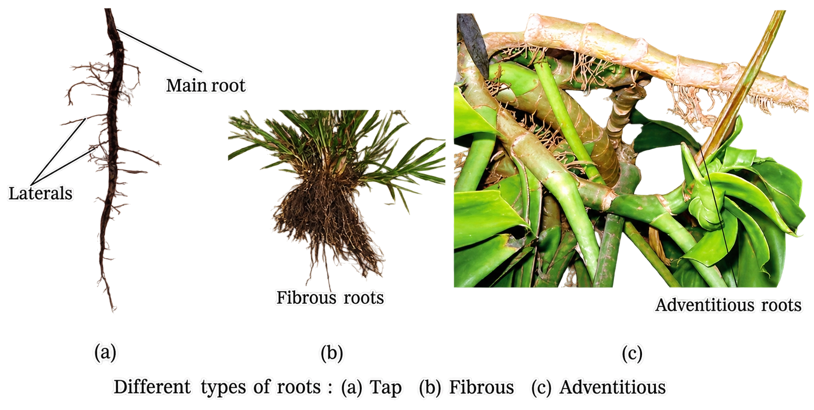
🎯Key Concepts
- 🧭Tap root system: primary root persists with lateral branches (e.g., mustard).
- 🧵Fibrous root system: many roots from stem base; primary root replaced (e.g., wheat).
- 🪴Adventitious roots: arise from stem/leaf parts (e.g., grass, Monstera, banyan).
- 🛡️Root cap protects the tender root apex while pushing through soil.
- 📏Root-tip zones: meristematic → elongation → maturation (root hairs present).
🔎TYPES OF ROOT SYSTEMS
- Tap root system: primary root persists and bears lateral roots of several orders (secondary, tertiary, etc.).
- Common in dicotyledonous plants (example: mustard).
- Fibrous root system: primary root short-lived; many roots arise from base of stem.
- Common in monocotyledonous plants (example: wheat).
- Adventitious roots: arise from plant parts other than radicle (examples: grass, Monstera, banyan).
⚙️REGIONS OF THE ROOT TIP (IN ORDER FROM APEX UPWARDS)
- Root cap: thimble-like cover at apex; protects as root penetrates soil.
- Region of meristematic activity: small, thin-walled cells with dense protoplasm; repeated divisions.
- Region of elongation: cells elongate/enlarge; increases root length.
- Region of maturation: cells differentiate; epidermal cells form root hairs.
- Root hairs: fine, delicate outgrowths; absorb water and minerals.
⚖️Tap Root vs Fibrous Root
| Basis | Tap root | Fibrous root |
|---|---|---|
| Origin | Direct elongation of radicle forms primary root | Primary root replaced by many roots from stem base |
| Main axis | One prominent main root with laterals | No single dominant root; cluster of similar roots |
| Typical plants | Dicots (e.g., mustard) | Monocots (e.g., wheat) |
✏️Solved Q&A
1
A seedling shows one prominent primary root with secondary and tertiary branches. Identify the root system and the likely plant group.
Answer:
Presence of a persistent primary root with laterals indicates tap root system.
Tap roots are typical of dicotyledonous plants.
Presence of a persistent primary root with laterals indicates tap root system.
Tap roots are typical of dicotyledonous plants.
✓ Tap root system; likely a dicot.
2
In wheat, the primary root is short-lived and many roots arise from the base of the stem. Name the root system.
Answer:
Many roots originating from the stem base replacing the primary root indicates a fibrous root system.
Many roots originating from the stem base replacing the primary root indicates a fibrous root system.
✓ Fibrous root system.
⭐Important Points
- Underground part = root system; above-ground part = shoot system.
- Tap root system = primary root + its branches (secondary, tertiary, etc.).
- Fibrous root system forms when primary root is replaced by many stem-base roots (common in monocots).
- Adventitious roots arise from non-radicle parts (stem/leaf).
- Root cap protects the apex; root hairs form in maturation region and are key for absorption.
💡Memory Technique
“CAP–M–E–M + HAIR”
📌Quick Recap
Tap root system = primary root (from radicle) + lateral roots (secondary, tertiary, etc.).Fibrous root system = many roots from base of stem; primary root short-lived (common in monocots).Adventitious roots = roots from parts other than radicle (e.g., grass, Monstera, banyan).Main functions: absorption, anchorage, storage, synthesis of plant growth regulators.Root-tip zones: root cap → meristematic activity → elongation → maturation (root hairs).
Radicle-derived roots: tap, fibrous, adventitious + key functions
ROOT SYSTEM BASICS
📖Definition & Introduction
- Root system is the underground organ system mainly for absorption and anchorage.
- Primary root forms by direct elongation of the radicle (embryonic root) during germination.
- Lateral roots arise from the primary root in orders: secondary, tertiary and higher.
- Based on origin and pattern, root systems are tap, fibrous or adventitious.
- General trend: dicots → tap root system; monocots → fibrous root system.
🖼️Diagram
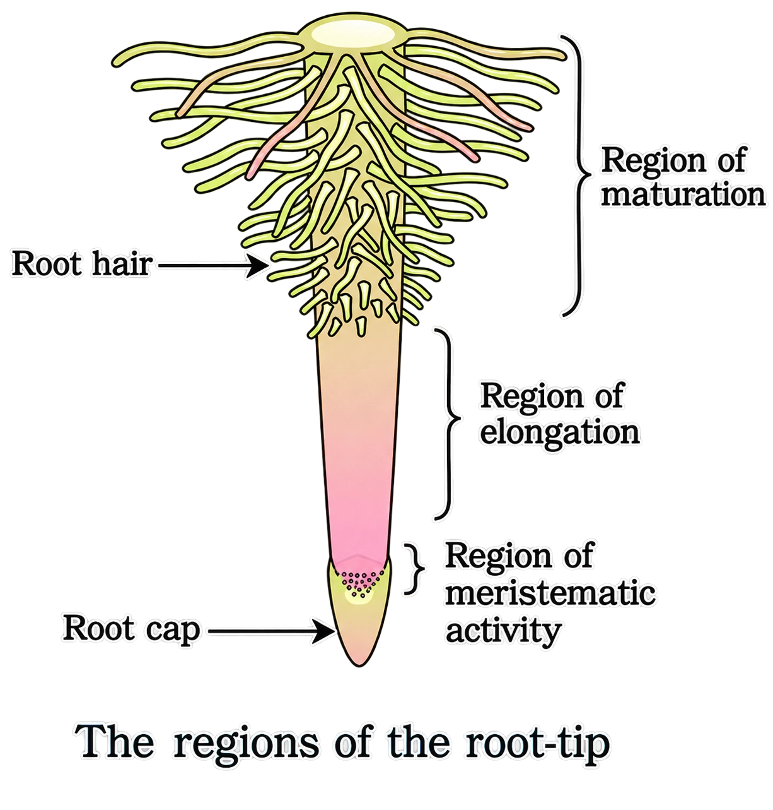
🎯Key Concepts
- 🧬Radicle is the embryo part that gives rise to roots.
- 🪵Tap root system = persistent primary root + its lateral branches (e.g., mustard).
- 🌾Fibrous root system = many similar roots from stem base; primary root short-lived (e.g., wheat).
- 🧷Adventitious roots arise from parts other than radicle (stem/leaf); may be underground or aerial.
- 💧Main functions: absorption of water/minerals, anchorage, storage, growth regulator synthesis.
🔎TYPES OF ROOT SYSTEMS (EXAM READY)
- Tap root system: primary root persists and gives secondary/tertiary branches; typical of many dicots.
- Fibrous root system: primary root is short-lived; many roots arise from base of stem; typical of monocots.
- Adventitious roots: originate from stem/leaf/other parts, not from radicle; e.g., grass, Monstera, banyan.
⚙️MAIN FUNCTIONS OF ROOTS
- Absorption: uptake of water and mineral ions from soil (majorly via younger regions with root hairs).
- Anchorage: fixes plant firmly in soil; resists lodging and uprooting.
- Storage: stores reserve food in many plants (as root modification).
- Synthesis: produces plant growth regulators in roots and transports them to shoots.
⚖️Tap Root vs Fibrous Root vs Adventitious Root
| Basis | Tap root system | Fibrous root system | Adventitious roots |
|---|---|---|---|
| Origin | From radicle → primary root persists | From stem base; primary root short-lived | From parts other than radicle (stem/leaf) |
| Main pattern | One main root + laterals | Many similar-sized roots | Variable; depends on plant/organ |
| Common in | Dicots | Monocots | Seen in many groups (monocots & dicots) |
| Examples | Mustard | Wheat | Grass, Monstera, banyan |
| Key exam phrase | Primary root + branches = tap root system | Many roots from stem base = fibrous | Adventitious ≠ aerial only |
✏️Solved Q&A
1
A seedling shows a short-lived primary root, later replaced by numerous thin roots arising from the stem base. Identify the root system and likely plant group.
Answer:
Primary root short-lived + many roots from stem base is the defining feature of fibrous root system.
Fibrous roots are typical of monocots.
Primary root short-lived + many roots from stem base is the defining feature of fibrous root system.
Fibrous roots are typical of monocots.
✓ Fibrous root system; likely a monocot (e.g., wheat/grass).
2
A student says, "Banyan has adventitious roots because they are aerial." Correct the statement using the proper definition.
Answer:
The correct criterion is origin, not location.
Adventitious roots are those arising from parts other than the radicle (often stem/leaf).
They may be aerial or underground depending on the plant.
The correct criterion is origin, not location.
Adventitious roots are those arising from parts other than the radicle (often stem/leaf).
They may be aerial or underground depending on the plant.
✓ Adventitious means "origin other than radicle"; banyan roots are adventitious because they arise from stem branches, and happen to be aerial.
⭐Important Points
- Primary root is a direct elongation of the radicle (embryonic root).
- Lateral roots arise from the primary root in orders (secondary, tertiary, etc.).
- Tap root system = primary root + its branches; typical of many dicots.
- Fibrous root system = roots from base of stem; typical of many monocots.
- Adventitious refers to non-radicle origin; not synonymous with aerial roots.
💡Memory Technique
“Mnemonic: Di-Tap, Mono-Fib”
📌Quick Recap
Primary root forms by elongation of the radicle.Lateral roots arise from primary root: secondary → tertiary → higher.Tap root system = primary root + its branches; common in dicots (e.g., mustard).Fibrous root system = many roots from stem base; common in monocots (e.g., wheat).Adventitious roots = roots from parts other than radicle; may be aerial or underground.Root functions: absorption, anchorage, storage, growth regulator synthesis.
Root apex zones: protection (root cap) → division (meristem) → elongation → differentiation (maturation) → absorption (root hairs).
ROOT TIP REGIONS
📖Definition & Introduction
- Root tip shows distinct regions that coordinate root growth in length and absorption.
- At the extreme apex is root cap, a thimble-like protective covering.
- Just above root cap lies meristematic region with actively dividing cells.
- Above meristem is region of elongation, where cells rapidly lengthen to increase root length.
- Further up is region of maturation, where cells differentiate; epidermis forms root hairs for absorption.
🖼️Diagram
🎯Key Concepts
- 🛡️Root cap protects the tender root apex as it pushes through soil.
- 🧫Meristematic region: small, thin-walled cells with dense protoplasm; repeated cell division.
- 📏Elongation region: newly formed cells enlarge and elongate, driving increase in root length.
- 🧩Maturation region: cells differentiate into permanent tissues; functional specialization appears.
- 💧Root hairs are fine, delicate outgrowths of epidermal cells; major site for water/mineral uptake.
🔎ZONE-WISE ROLES (EXAM-FAVOURITE)
- Root cap: protects apex; helps root penetrate soil by reducing mechanical injury.
- Meristematic region: tiny thin-walled cells; dense protoplasm; high mitotic activity.
- Region of elongation: cells enlarge and elongate rapidly; main contributor to length growth.
- Region of maturation: cells differentiate into tissues; epidermal cells produce root hairs.
⚙️ROOT HAIRS: WHY THEY MATTER
- Root hairs are epidermal outgrowths in maturation zone; very fine and delicate.
- They increase contact with soil water films, boosting absorption of water and minerals.
- They are short-lived and replaced continuously as root grows into new soil.
- Do not confuse root hairs with lateral roots; hairs are unicellular extensions of epidermis.
⚖️MERISTEMATIC vs ELONGATION vs MATURATION (ROOT TIP)
| Basis | Meristematic region | Region of elongation | Region of maturation |
|---|---|---|---|
| Cell activity | Repeated cell division | Rapid cell elongation/enlargement | Differentiation into permanent tissues |
| Cell features | Very small; thin-walled; dense protoplasm | Vacuolation increases; cells lengthen | Specialised cell types appear; mature walls |
| Main outcome | Produces new cells | Increases root length | Forms functional tissues; root hairs develop |
| Relative position | A few mm above root cap | Above meristem | Above elongation |
✏️Solved Q&A
1
A seedling root is growing into soil. Which root-tip region mainly causes increase in root length, and why?
Answer:
New cells are produced in the meristematic region, but they are small and not yet lengthened.
Cells just above it undergo rapid elongation and enlargement.
This elongation pushes the tip forward, increasing root length.
New cells are produced in the meristematic region, but they are small and not yet lengthened.
Cells just above it undergo rapid elongation and enlargement.
This elongation pushes the tip forward, increasing root length.
✓ The region of elongation; rapid cell elongation/enlargement here chiefly increases root length.
2
Root hairs are absent close to the root apex. Explain the correct reason using root-tip zones.
Answer:
The extreme apex is covered by root cap, followed by meristematic and elongation zones.
Root hairs arise from epidermal cells only after cells stop elongating and begin differentiation.
Therefore hairs form in the region of maturation, not near the tip.
The extreme apex is covered by root cap, followed by meristematic and elongation zones.
Root hairs arise from epidermal cells only after cells stop elongating and begin differentiation.
Therefore hairs form in the region of maturation, not near the tip.
✓ Root hairs appear in the maturation region because epidermal cells form hairs after differentiation, not during active division/elongation.
⭐Important Points
- Order from apex upward: root cap → meristematic → elongation → maturation.
- Meristematic cells: small, thin-walled, dense protoplasm, repeated mitosis.
- Elongation zone is chiefly responsible for growth in length of root.
- Maturation zone shows differentiation; root hairs originate from epidermis here.
- Root hairs are key absorptive structures for water and minerals.
💡Memory Technique
“Mnemonic: C-M-E-M from the tip upward”
Meristematic region: Mitosis (cell division).
Elongation increases length.
Maturation: tissues mature + root hairs.
📌Quick Recap
Apex sequence: root cap → meristematic zone → elongation zone → maturation zone.Root cap: thimble-like cover; protects tender root apex in soil.Meristematic zone: small thin-walled cells with dense protoplasm; repeated mitosis.Elongation zone: cells rapidly elongate/enlarge; chief region for increase in root length.Maturation zone: cells differentiate into permanent tissues; root hairs arise from epidermis here for water/mineral absorption.
Root tip shows 4 functional zones; root hairs arise in maturation zone for absorption
REGIONS OF ROOT (ROOT TIP ZONES)
📖Definition & Introduction
- Regions of root are distinct functional zones at the root tip arranged from apex upward.
- Order: root cap → meristematic region → region of elongation → region of maturation.
- Each zone has characteristic cell activity: protection, mitosis, elongation, then differentiation.
- Root hairs are fine epidermal outgrowths in the maturation region that increase absorption surface.
- Absorption of water and minerals occurs mainly through the root hair zone in contact with soil solution.
🖼️Diagram
Functional zones from apex upward: root cap → meristematic → elongation → maturation; root hairs in maturation zone.
🎯Key Concepts
- 🛡️Root cap: thimble-like cover protecting tender apex during soil penetration.
- 🧬Meristematic region: small, thin-walled cells with dense protoplasm; high mitotic activity.
- 📏Elongation region: cells enlarge rapidly; causes major increase in root length.
- 🧩Maturation region: cells differentiate into tissues; epidermis forms root hairs.
- 💧Root hairs: delicate, short-lived; maximize soil contact for water + mineral uptake.
🔎WHAT HAPPENS IN EACH ZONE (EXAM WORDING)
- Root cap: protects apical meristem; helps root push through soil without injury.
- Meristematic region: cells are very small, thin-walled, dense protoplasm; repeated mitosis.
- Elongation region: newly formed cells enlarge and elongate; contributes most to root length increase.
- Maturation region: cells stop elongating and differentiate into permanent tissues; root hairs appear.
⚙️ROOT HAIRS & ABSORPTION (CORE IDEA)
- Root hairs are epidermal outgrowths; each hair increases absorbing surface area.
- They occur in the region of maturation (differentiation zone).
- They absorb water and minerals from the thin film of soil solution around soil particles.
- Root hairs are fine and delicate; damage reduces absorption even if deeper root is intact.
⚖️MERISTEMATIC vs ELONGATION vs MATURATION (ROOT TIP)
| Basis | Meristematic region | Region of elongation | Region of maturation |
|---|---|---|---|
| Location (from apex) | A few millimetres above root cap | Just above meristematic region | Above elongation region |
| Dominant process | Cell division (mitosis) | Cell elongation + enlargement | Differentiation into tissues |
| Cell features | Very small; dense protoplasm; thin wall | Vacuolation increases; rapid size increase | Mature cell types formed |
| Key outcome | New cells produced | Root length increases | Root hairs appear; absorption increases |
✏️Solved Q&A
1
A seedling root tip is damaged, and the root cap is removed. Predict the main immediate problem for the root and why.
Answer:
Root cap normally protects the tender apex as the root penetrates soil.
Without the cap, the apical meristem and nearby cells are exposed to abrasion and injury.
Damage to dividing cells reduces production of new cells and thus slows growth.
Root cap normally protects the tender apex as the root penetrates soil.
Without the cap, the apical meristem and nearby cells are exposed to abrasion and injury.
Damage to dividing cells reduces production of new cells and thus slows growth.
✓ The root tip becomes prone to mechanical injury during soil penetration because the protective root cap is missing, which can slow root growth.
2
A student claims that most water absorption occurs at the root cap because it is at the tip. Correct the statement with reasoning.
Answer:
Absorption is mainly by root hairs, not by the root cap.
Root hairs are formed by epidermal cells in the region of maturation (differentiation zone).
Root hairs increase surface area and contact with soil solution, so they are the primary absorption site.
Absorption is mainly by root hairs, not by the root cap.
Root hairs are formed by epidermal cells in the region of maturation (differentiation zone).
Root hairs increase surface area and contact with soil solution, so they are the primary absorption site.
✓ Most absorption occurs in the maturation region through root hairs, not at the root cap.
⭐Important Points
- Correct order from apex upward: root cap → meristematic → elongation → maturation.
- Meristematic region shows repeated mitosis; cells are small, thin-walled, dense protoplasm.
- Elongation region is responsible for most increase in root length.
- Maturation region is the differentiation zone; permanent tissues develop here.
- Root hairs arise from epidermis in maturation region and absorb water and minerals.
💡Memory Technique
“Mnemonic: C-M-E-M (from apex upward)”
📌Quick Recap
Order (from apex upward): Root cap → Meristematic region → Elongation region → Maturation regionRoot cap: thimble-like; protects tender root tip during soil penetrationMeristematic region: a few mm above root cap; small thin-walled cells; dense protoplasm; repeated mitosisElongation region: rapid elongation and enlargement; responsible for increase in root lengthMaturation region: cells differentiate into permanent tissuesRoot hairs: fine, delicate epidermal outgrowths in maturation region; main absorption site for water and minerals
Ascending shoot axis from plumule: nodes, internodes, buds, and key functions
STEM MORPHOLOGY
📖Definition & Introduction
- Stem is the ascending part of the plant axis bearing branches, leaves, flowers and fruits.
- It develops from the plumule of the embryo during seed germination.
- Stem shows distinct nodes (leaf-bearing regions) and internodes (segments between nodes).
- Stem bears buds: terminal (at apex) and axillary (in leaf axil at nodes).
- Young stem is generally green; with age it often becomes woody and dark brown.
🖼️Diagram
Stem shows nodes, internodes, terminal bud and axillary bud on an ascending axis.
🎯Key Concepts
- 🌱Origin: stem arises from plumule (shoot apex of embryo).
- 📍Node: point on stem where leaf (and axillary bud) is borne.
- ↔️Internode: stem region between two nodes; elongation increases plant height.
- 🎯Terminal bud: apical bud responsible for primary growth and apical dominance.
- 🌿Axillary bud: forms branches/flowers; key for bushiness and pruning responses.
- 🚰Conduction: transports water & minerals upward and photosynthates to sinks.
🔎DISTINGUISHING STEM FROM ROOT (EXAM-FAVOURITE)
- Stem is usually ascending and bears nodes and internodes; roots lack both.
- Stem bears leaves, branches, flowers, fruits; roots never bear these.
- Stem bears terminal and axillary buds; roots do not bear buds.
- Young stem is often green and may photosynthesise; most roots are non-green.
- Roots show root cap and root hairs; stems lack root cap and root hairs.
⚙️FUNCTIONS OF STEM (WHAT TO WRITE IN 3 LINES)
- Support & spread: holds leaves for light; provides framework for flowers and fruits.
- Conduction: transports water/minerals and distributes photosynthates to storage/growing regions.
- Storage: some stems store food/water (e.g., tuber, rhizome, succulent stem).
- Protection: some stems form thorns or tough woody bark.
- Vegetative propagation: stems can produce new plants (cuttings, runners, rhizomes, tubers).
⚖️STEM vs ROOT (MORPHOLOGY)
| Basis | Stem | Root |
|---|---|---|
| Direction | Usually ascending axis | Usually descending/within soil |
| Nodes & internodes | Present | Absent |
| Buds | Terminal and axillary buds present | Buds absent |
| Organs borne | Leaves, branches, flowers, fruits | No leaves/flowers/fruits |
| Apex features | No root cap; no root hairs | Root cap and root hairs present |
| Colour (typical) | Young stems often green; older may be woody | Usually non-green |
✏️Solved Q&A
1
A student claims: "A structure with leaves and axillary buds growing upward is a root." Correct the statement with reasons.
Answer:
Leaves arise at nodes, and axillary buds occur in leaf axils—both are stem features.
A root has root cap and root hairs and lacks nodes, internodes and buds.
Hence the upward structure bearing leaves and axillary buds must be a stem/shoot.
Leaves arise at nodes, and axillary buds occur in leaf axils—both are stem features.
A root has root cap and root hairs and lacks nodes, internodes and buds.
Hence the upward structure bearing leaves and axillary buds must be a stem/shoot.
✓ The statement is incorrect; the described structure is a stem (shoot), not a root.
2
Why does pruning the shoot tip often increase branching? Identify the bud involved.
Answer:
The shoot tip contains the terminal (apical) bud which promotes primary growth and can suppress axillary bud outgrowth (apical dominance).
When the terminal bud is removed, suppression decreases and axillary buds at nodes begin to grow into branches.
The shoot tip contains the terminal (apical) bud which promotes primary growth and can suppress axillary bud outgrowth (apical dominance).
When the terminal bud is removed, suppression decreases and axillary buds at nodes begin to grow into branches.
✓ Pruning removes the terminal bud, allowing axillary buds to grow and increase branching.
⭐Important Points
- Stem is the ascending axis arising from plumule; root arises from radicle.
- Node = region where leaves are born; internode = part between two nodes.
- Terminal bud sits at the apex; axillary bud is at node in leaf axil.
- Stem conducts water & minerals and translocates photosynthates to sink organs.
- Young stems generally green; many become woody and dark brown with age.
💡Memory Technique
“NIB + TA = Stem identity”
📌Quick Recap
Stem = ascending shoot axis developed from plumule.Node: leaf-bearing region of stem; internode: region between nodes.Terminal bud at apex; axillary bud in leaf axil at node.Young stem often green; older stem often woody and dark brown.Functions: support + conduction (water/minerals, photosynthates) + storage + protection + vegetative propagation.
Parts of a typical leaf, their modifications, and how veins support transport + strength
LEAF STRUCTURE
📖Definition & Introduction
- Leaf is a lateral, generally flattened green organ borne at a node, with a bud in its axil.
- A typical leaf has three main parts: leaf base, petiole and lamina (leaf blade).
- Leaves arise from shoot apical meristems and are arranged in acropetal order on the stem.
- Leaf axil contains an axillary bud that can develop into a branch.
- Main function: photosynthesis; also aids transpiration and gaseous exchange via lamina.
🖼️Diagram
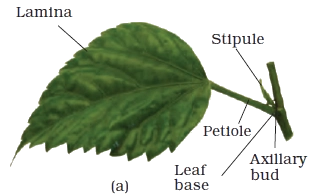
🎯Key Concepts
- 🧩Leaf base attaches leaf to stem; may bear stipules or form sheath/pulvinus.
- 🦴Petiole positions lamina to light; long flexible petioles reduce heat by fluttering.
- 🌿Lamina is expanded green part with midrib, veins and veinlets.
- 🚰Veins act as channels for water, minerals and food; also provide rigidity.
- 🧠Venation = arrangement of veins/veinlets; reticulate (dicots) vs parallel (monocots).
🔎PARTS OF A TYPICAL LEAF (WITH MODIFICATIONS)
- Leaf base: attaches leaf to stem; stipules may arise as two lateral leaf-like appendages.
- In monocots, leaf base expands into a sheath covering stem partially/wholly.
- In some legumes, leaf base becomes swollen: pulvinus (helps leaf movement/orientation).
- Petiole: stalk connecting lamina to stem; helps hold blade to light; flexible petiole cools leaf.
- Lamina: green expanded blade; shows variation in shape, margin, apex, surface and incision.
⚙️VEINS, VEINLETS & VENATION: ROLES
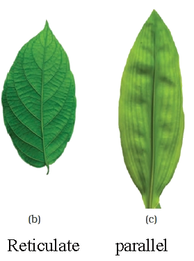
- Midrib: usually the prominent central vein; supports lamina and gives off lateral veins.
- Veins and veinlets: network/parallel lines inside lamina; provide mechanical strength.
- They act as transport channels for water + minerals (to lamina) and food (from lamina).
- Venation: pattern of veins/veinlets in lamina; used as a key diagnostic feature in exams.
⚖️RETICULATE vs PARALLEL VENATION
| Basis | Reticulate venation | Parallel venation |
|---|---|---|
| Vein arrangement | Veinlets form a network | Veins run parallel in lamina |
| Common in | Generally dicots | Most monocots |
| Look in diagram | Net-like branching from midrib | Many near-parallel lines |
✏️Solved Q&A
1
A student says: "Leaflets of a compound leaf have axillary buds." Is this correct? Justify.
Answer:
Axillary bud is found in the axil of the leaf (at the node) and can form a branch.
In compound leaves, the bud is in the axil of the petiole, not in the axil of each leaflet.
Axillary bud is found in the axil of the leaf (at the node) and can form a branch.
In compound leaves, the bud is in the axil of the petiole, not in the axil of each leaflet.
✓ Incorrect; axillary buds occur at the axil of the whole leaf (petiole), not of leaflets.
2
A plant shows a swollen leaf base and leaf movements with touch/wind. Which part is modified, and what is it called?
Answer:
In some leguminous plants, the leaf base becomes swollen.
This swollen leaf base is called the pulvinus and aids movement/orientation.
In some leguminous plants, the leaf base becomes swollen.
This swollen leaf base is called the pulvinus and aids movement/orientation.
✓ Leaf base is modified into a pulvinus.
⭐Important Points
- Leaf develops at node and always has an axillary bud in its axil (key stem vs leaflet clue).
- Typical leaf parts: leaf base + petiole + lamina; lamina bears midrib, veins, veinlets.
- Stipules are paired appendages at leaf base (when present).
- Monocot leaf base often forms sheath; legume leaf base may form pulvinus.
- Veins provide rigidity and transport: water/minerals to lamina, food from lamina.
💡Memory Technique
“BLP + SShPu + MVV”
📌Quick Recap
Leaf = lateral flattened organ at node; axillary bud in its axil.Typical leaf parts: leaf base (attachment) + petiole (stalk) + lamina (blade).Leaf base modifications: stipules (paired appendages), sheath (monocots), pulvinus (some legumes).Midrib = main central vein; veins/veinlets arise from it within lamina.Veins: rigidity + transport (water/minerals/food).Venation: reticulate (network; generally dicots) vs parallel (parallel veins; most monocots).
Ascending shoot axis: nodes–internodes–buds, plumule origin, age changes, and functions
STEM MORPHOLOGY
📖Definition & Introduction
- Stem is the ascending part of plant axis bearing branches, leaves, flowers, fruits.
- Develops from the plumule of the embryo during seed germination.
- Nodes are regions where leaves (and axillary buds) arise; internodes lie between two nodes.
- Bears buds: terminal bud at apex and axillary bud in leaf axil.
- Young stem is usually green; with age it often becomes woody and dark brown.
🖼️Diagram
Stem shows nodes, internodes, terminal and axillary buds; axillary bud can develop into a branch.
🎯Key Concepts
- 🧬Embryonic origin: plumule → shoot system axis (stem + branches).
- 📍Node = leaf-bearing point; diagnostic feature distinguishing stem from root.
- ↔️Internode length controls spacing of leaves and branches on the shoot.
- 🌱Terminal bud drives primary elongation; axillary buds form lateral branches.
- 🚰Conduction: transports water + minerals upward and photosynthates to sinks.
- 🍠Stem may store food and enable vegetative propagation in many plants.
🔎KEY PARTS & HOW TO IDENTIFY STEM
- Nodes bear leaves; leaf axil contains axillary bud (future branch).
- Internodes decide height gain and spacing of leaves/branches.
- Stem bears buds; roots do not bear buds, leaves, flowers or fruits.
- Stem is generally positively phototropic; young stem may have multicellular hairs.
⚙️FUNCTIONS (HIGH-YIELD)
- Conduction: water and minerals from roots; photosynthates from leaves to storage/growing regions.
- Support & display: spreads branches to position leaves for light and flowers for pollination.
- Storage: reserve food stored in some stems (often associated with stem modifications).
- Vegetative propagation: new plant can arise from stem parts in many species (e.g., cuttings, tubers).
⚖️TERMINAL BUD vs AXILLARY BUD
| Basis | Terminal bud | Axillary bud |
|---|---|---|
| Position | At stem apex | In axil of a leaf at the node |
| Main role | Primary growth (elongation of main axis) | Lateral branching / side shoots |
| Outcome | Extends shoot tip | May develop into a branch or flower-bearing shoot |
✏️Solved Q&A
1
A student claims: "Internodes are the points where leaves arise." Correct the statement and justify using stem morphology.
Answer:
Leaves arise from nodes, not internodes.
Internode is the stem segment between two successive nodes.
Leaves arise from nodes, not internodes.
Internode is the stem segment between two successive nodes.
✓ Leaves arise from nodes; internodes are the regions between two nodes.
2
A twig has small buds at the tip and also just above each leaf scar. Identify these buds and predict what the buds near leaf scars can form.
Answer:
Bud at the tip is the terminal (apical) bud.
Buds near leaf scars are in the leaf axil, hence axillary buds.
Axillary buds can develop into lateral branches (or branchlets bearing leaves/flowers).
Bud at the tip is the terminal (apical) bud.
Buds near leaf scars are in the leaf axil, hence axillary buds.
Axillary buds can develop into lateral branches (or branchlets bearing leaves/flowers).
✓ Tip bud = terminal bud; buds near leaf scars = axillary buds, which can form branches.
⭐Important Points
- Stem arises from plumule; root arises from radicle (frequent NCERT line).
- Node bears leaves and axillary buds; internode is the segment between nodes.
- Terminal bud maintains apical growth; axillary bud is responsible for branching.
- Young stems are usually green; older stems often become woody and dark brown.
- Stem conducts water/minerals and photosynthates; also aids storage and vegetative propagation.
💡Memory Technique
“NIB-BuT: Node–Internode–Buds (Terminal & Axillary)”
📌Quick Recap
Stem = ascending plant axis bearing branches, leaves, flowers and fruits.Origin: stem develops from embryo plumule during germination.Node: region where leaves arise; leaf axil bears axillary bud.Internode: portion between two successive nodes.Terminal bud at apex; axillary bud in leaf axil → branch.Functions: support + display, conduction (water/minerals and photosynthates), storage, vegetative propagation.
Leaf as a lateral organ: parts, attachments, midrib–vein network, and venation types
LEAF STRUCTURE AND VENATION
📖Definition & Introduction
- Leaf is a lateral, generally flattened organ borne at the node of the stem.
- A leaf has an axil (angle with stem) that bears an axillary bud (future branch).
- Leaves arise from shoot apical meristems and are arranged in acropetal order (younger near apex).
- Typical leaf parts: leaf base, petiole, and lamina (leaf blade).
- Venation is the arrangement of veins and veinlets in the lamina.
🖼️Diagram
Labelled parts of a typical leaf with midrib and lateral veins (venation in lamina).
🎯Key Concepts
- 📍Node is the stem region where a leaf is borne; internode lies between two nodes.
- 🔺Axillary bud is in the axil of the leaf (at the base of petiole/leaf base).
- 🧩Leaf base may bear stipules; in monocots it often forms a sheath.
- 🎈Pulvinus is a swollen leaf base in many legumes; helps leaf movement.
- 🧵Petiole holds lamina to light; flexibility allows fluttering for cooling and aeration.
- 🟢Lamina is the expanded green part; main photosynthetic surface.
🔎STRUCTURE: LEAF BASE, PETIOLE, LAMINA
- Leaf base attaches leaf to stem; may bear stipules (two lateral appendages).
- In many monocots, leaf base expands into a sheath covering stem partly/wholly.
- In many legumes, leaf base becomes swollen: pulvinus (motor region for movement).
- Petiole is the stalk; positions lamina towards light; may allow fluttering and cooling.
- Lamina contains veins and veinlets; shows variations in shape, margin, apex, incision.
⚙️MIDRIB, VEINS & THEIR FUNCTIONS
- Midrib = main central vein of the lamina; gives support and conducts materials.
- Veins provide rigidity to blade and act as transport channels for water, minerals, food.
- Venation pattern helps identify major groups: dicots vs monocots (general rule).
- Do not confuse: midrib (in lamina) vs rachis (axis in pinnately compound leaf).
⚖️RETICULATE vs PARALLEL VENATION
| Basis | Reticulate | Parallel |
|---|---|---|
| Vein pattern | Veinlets form a network | Veins run parallel in lamina |
| Typical group | Generally dicots | Characteristically monocots |
| Visual cue | Mesh-like net | Straight, side-by-side lines |
| Midrib | Usually prominent midrib with branching network | Midrib may be present; many parallel veins dominate |
✏️Solved Q&A
1
A student claims: "Leaf is an axial organ like stem; it has nodes and internodes." Correct the statement with reasons.
Answer:
Leaf is a lateral organ borne at the node of the stem, not an axial organ.
Nodes and internodes are features of the stem axis; leaf has leaf base, petiole, lamina.
Leaf shows an axil with an axillary bud; this bud can form a branch.
Leaf is a lateral organ borne at the node of the stem, not an axial organ.
Nodes and internodes are features of the stem axis; leaf has leaf base, petiole, lamina.
Leaf shows an axil with an axillary bud; this bud can form a branch.
✓ Leaf is a lateral organ at a node; nodes/internodes belong to stem, not to leaf.
2
How will you justify that venation is related to plant group in basic classification? Mention the two main venation types.
Answer:
Venation is the arrangement of veins and veinlets in the lamina.
Dicot leaves generally show reticulate venation (network of veinlets).
Monocot leaves characteristically show parallel venation (veins parallel to each other).
Thus, venation is a quick external character often used in preliminary identification.
Venation is the arrangement of veins and veinlets in the lamina.
Dicot leaves generally show reticulate venation (network of veinlets).
Monocot leaves characteristically show parallel venation (veins parallel to each other).
Thus, venation is a quick external character often used in preliminary identification.
✓ Two main types: reticulate (generally dicots) and parallel (characteristically monocots).
⭐Important Points
- Leaf is lateral, exogenous outgrowth of stem, developed at the node.
- Leaf bears an axillary bud in its axil; bud develops into a branch.
- Leaves show acropetal order: younger leaves nearer the shoot apex.
- Three main parts: leaf base, petiole, lamina.
- Leaf base variations: stipules, sheath (monocots), pulvinus (legumes).
💡Memory Technique
“B-P-L + SShPu (parts of a typical leaf)”
📌Quick Recap
Leaf: lateral, flattened organ borne at a node; main photosynthetic organ.Axil bears axillary bud; bud can form a branch.Arrangement: acropetal (younger leaves towards apex).Typical parts: leaf base + petiole + lamina.Leaf base modifications: stipules, sheath (monocots), pulvinus (legumes).Midrib = central main vein; veins give rigidity + transport channels.Venation: reticulate (network; generally dicots) vs parallel (parallel veins; monocots).
Venation in lamina (reticulate/parallel) + simple vs compound leaves (pinnate & palmate compound)
VENATION AND LEAF TYPES (SIMPLE vs COMPOUND)
📖Definition & Introduction
- Venation is the arrangement of veins and veinlets in the leaf lamina.
- Veins provide rigidity to lamina and act as channels for water, minerals and food transport.
- A prominent central vein is the midrib; lateral veins/veinlets arise from it.
- Reticulate venation: veinlets form a network; typical of most dicots.
- Parallel venation: veins run parallel; typical of most monocots.
- Compound leaf has leaflets; leaflets do not bear axillary buds (bud is at petiole axil).
🎯Key Concepts
- 🧠Simple vs compound depends on whether incisions reach the midrib (leaflets formed) or not.
- 🕸️Reticulate = network of veinlets; commonly linked with dicot leaves.
- 📏Parallel = veins nearly parallel; commonly linked with monocot leaves.
- 🌿Rachis is the common axis in pinnately compound leaves; it represents the midrib.
- 🔎In compound leaves, axillary bud is at the petiole base, not at leaflet bases.
- 🧩Pinnate: leaflets along rachis; Palmate: leaflets arise from one point at petiole tip.
🔎VENATION: RETICULATE vs PARALLEL
- Reticulate venation: veinlets form a net-like network in lamina.
- Generally seen in dicotyledonous leaves (NCERT generalisation).
- Parallel venation: veins run parallel to each other in lamina.
- Characteristic of most monocotyledonous leaves (NCERT generalisation).
- Midrib is usually prominent; lateral veins/veinlets arise and spread in lamina.
⚙️LEAF TYPES: SIMPLE, PINNATELY COMPOUND, PALMATELY COMPOUND
- Simple leaf: lamina entire, or incised but cuts do not touch the midrib.
- Compound leaf: incisions reach the midrib, dividing lamina into leaflets.
- Axillary bud is present in the axil of petiole (simple and compound).
- Leaflets lack axillary buds at their base (helps avoid confusing leaflets with leaves).
- Pinnately compound: leaflets on common axis rachis; rachis represents midrib (e.g., neem).
⚖️Quick Differentiation
| Basis | Reticulate venation | Parallel venation |
|---|---|---|
| Vein pattern | Veinlets form a network | Veins run parallel |
| Common occurrence | Generally in dicots | Generally in monocots |
| Typical look | Net-like mesh between veins | Many near-equal straight veins |
✏️Solved Q&A
1
A student says: "Leaflets of a compound leaf have axillary buds, so each leaflet is a leaf." Correct the statement with reason.
Answer:
An axillary bud occurs in the axil of the petiole (in both simple and compound leaves).
In a compound leaf, the lamina is divided into leaflets, but leaflet bases do not bear axillary buds.
Therefore, a leaflet is not considered a separate leaf; the entire structure is one compound leaf.
An axillary bud occurs in the axil of the petiole (in both simple and compound leaves).
In a compound leaf, the lamina is divided into leaflets, but leaflet bases do not bear axillary buds.
Therefore, a leaflet is not considered a separate leaf; the entire structure is one compound leaf.
✓ Leaflets lack axillary buds; only the petiole axil has a bud, so leaflets are parts of one compound leaf.
2
How will you distinguish a pinnately compound leaf from a palmately compound leaf using rachis and leaflet attachment?
Answer:
Check for a common axis beyond the petiole: if present, it is the rachis.
If leaflets are attached along the rachis (feather-like arrangement), it is pinnately compound.
If all leaflets arise from a single point at the tip of petiole, it is palmately compound.
Check for a common axis beyond the petiole: if present, it is the rachis.
If leaflets are attached along the rachis (feather-like arrangement), it is pinnately compound.
If all leaflets arise from a single point at the tip of petiole, it is palmately compound.
✓ Pinnate: leaflets on rachis; Palmate: leaflets from one point at petiole tip (no rachis bearing leaflets).
⭐Important Points
- Venation is defined for the lamina: arrangement of veins and veinlets.
- Midrib is the prominent central vein; veins give rigidity and transport pathways.
- Reticulate: veinlets form a network; Parallel: veins run parallel within lamina.
- Simple leaf: incisions (if any) do not reach the midrib.
- Compound leaf: incisions reach the midrib forming leaflets.
💡Memory Technique
“Mnemonic: PIN vs PALM”
📌Quick Recap
Venation = arrangement of veins and veinlets in lamina.Reticulate venation: veinlets form a network; generally in dicots.Parallel venation: veins run parallel; characteristic of most monocots.Midrib: prominent middle vein of lamina.Simple leaf: incisions do not reach midrib.Compound leaf: incisions reach midrib → leaflets formed.Pinnately compound: leaflets along rachis (rachis represents midrib).Palmately compound: leaflets attached at one point at tip of petiole.
Simple vs compound leaves (bud test), pinnate vs palmate leaflets, and leaf arrangement on stem
LEAF TYPES AND PHYLLOTAXY
📖Definition & Introduction
- Leaf type is decided by lamina incision and the presence/absence of axillary buds at leaflets.
- Simple leaf: lamina entire, or incised but cuts do not reach the midrib.
- Compound leaf: incisions reach the midrib, dividing lamina into distinct leaflets.
- Bud criterion: axillary bud present in axil of petiole; no axillary bud in axil of leaflets.
- Phyllotaxy is the pattern of arrangement of leaves on stem/branch: alternate, opposite, whorled.
🖼️Diagram
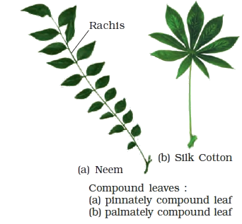
🎯Key Concepts
- 🔍Spot the axillary bud at the leaf base: it marks a leaf, not a leaflet.
- 🧩In compound leaves, the lamina is partitioned into multiple leaflets.
- 🌿Rachis is the common axis in pinnate compound leaves; it represents the midrib of the whole leaf.
- ✋Palmate compound: leaflets arise from one point at petiole tip, like fingers.
- 🧭Phyllotaxy: alternate (1/node), opposite (2/node), whorled (≥3/node).
🔎BUD CRITERION (MOST EXAMINABLE)
- Check the axil of the petiole: axillary bud is present in both simple and compound leaves.
- In a compound leaf, leaflets never bear axillary buds in their axils.
- If a structure has an axillary bud at its base, it is a leaf (or branch), not a leaflet.
- Do not confuse leaflet with small leaf; the bud test resolves it.
⚙️COMPOUND LEAVES: PINNATE VS PALMATE
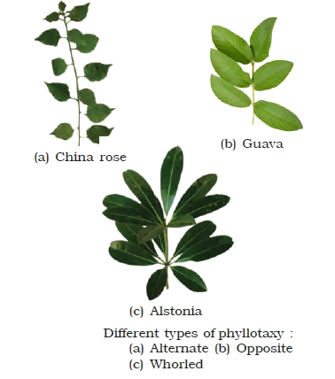
- Pinnately compound: leaflets arranged on a common axis rachis; example: neem.
- Palmately compound: all leaflets attached at one point at petiole tip; example: silk cotton.
- Rachis represents the midrib of the whole leaf in pinnate compound leaves.
- Visual cue: pinnate = "feather-like" along rachis; palmate = "hand-like" from one point.
⚖️Simple Leaf vs Compound Leaf: Key Differences
| Basis | Simple leaf | Compound leaf |
|---|---|---|
| Lamina incision | Entire or incised; cuts do not reach midrib | Cuts reach midrib; lamina divided into leaflets |
| Smallest unit | Single lamina | Multiple leaflets on same petiole/rachis |
| Axillary bud | Present in axil of petiole | Present in axil of petiole; absent in leaflet axils |
| Examples (NCERT) | Common classroom examples: mango, guava (simple leaves) | Neem (pinnate), silk cotton (palmate) |
✏️Solved Q&A
1
A student calls each segment of a neem leaf a "leaf". How will you correct using the bud criterion?
Answer:
Locate the axillary bud: it occurs at the axil of the petiole (leaf base).
Check each segment (leaflet): there is no axillary bud at the leaflet base.
Therefore, segments are leaflets, and the whole structure is one pinnately compound leaf.
Locate the axillary bud: it occurs at the axil of the petiole (leaf base).
Check each segment (leaflet): there is no axillary bud at the leaflet base.
Therefore, segments are leaflets, and the whole structure is one pinnately compound leaf.
✓ Neem has one pinnately compound leaf with many leaflets; only the whole leaf bears an axillary bud.
2
Identify the phyllotaxy: (i) one leaf per node in a zig-zag pattern, (ii) two leaves per node opposite each other, (iii) three leaves from the same node.
Answer:
(i) One leaf per node alternating sides ⇒ alternate phyllotaxy.
(ii) Two leaves at same node opposite each other ⇒ opposite phyllotaxy.
(iii) More than two leaves at a node ⇒ whorled phyllotaxy.
(i) One leaf per node alternating sides ⇒ alternate phyllotaxy.
(ii) Two leaves at same node opposite each other ⇒ opposite phyllotaxy.
(iii) More than two leaves at a node ⇒ whorled phyllotaxy.
✓ (i) Alternate (ii) Opposite (iii) Whorled
⭐Important Points
- Simple vs compound depends on whether incisions reach the midrib.
- Bud criterion is definitive: axillary bud at leaf base; never at leaflet base.
- Rachis is the axis of a pinnately compound leaf and represents the midrib of the whole leaf (do not confuse it with the midrib of an individual leaflet lamina).
- Phyllotaxy types: alternate, opposite, whorled; match with leaves per node.
- Examples to quote: alternate (china rose/mustard/sunflower), opposite (Calotropis/guava), whorled (Alstonia).
💡Memory Technique
“A–O–W + Bud-at-Base Rule”
📌Quick Recap
Simple leaf: incisions (if any) do not reach midrib.Compound leaf: incisions reach midrib → lamina divided into leaflets.Axillary bud present in axil of petiole (simple + compound).Leaflets of compound leaf: no axillary buds in their axils.Pinnate compound: leaflets on rachis (e.g., neem).Palmate compound: leaflets from one point at petiole tip (e.g., silk cotton).Phyllotaxy: alternate (1/node), opposite (2/node), whorled (≥3/node).
Leaf arrangement on stem at nodes: alternate, opposite, whorled
PHYLLOTAXY TYPES
📖Definition & Introduction
- Phyllotaxy is the pattern of arrangement of leaves on the stem/branch at nodes.
- Leaves arise from nodes; the stem region between two nodes is an internode.
- Phyllotaxy helps maximize light capture and reduces overcrowding (self-shading).
- Major types (NCERT): alternate, opposite, whorled.
- Type is identified by counting how many leaves arise at one node and their positions.
🖼️Diagram
Identify phyllotaxy by counting leaves per node: 1 (alternate), 2 (opposite), >2 (whorled).
🎯Key Concepts
- 📍Check one node: 1 leaf → alternate; 2 leaves → opposite; >2 → whorled.
- 🔁Alternate: single leaf per node, successive nodes show alternating sides.
- 🪞Opposite: pair of leaves at same node, positioned opposite each other.
- 🌀Whorled: three or more leaves at same node forming a ring (whorl).
- 🧪Standard examples: alternate—china rose, mustard, sunflower; opposite—guava, Calotropis; whorled—Alstonia.
🔎HOW TO IDENTIFY ON A PLANT
- First locate nodes (points where leaves attach) and ignore internode length.
- Count leaves arising at the same node; then observe their relative positions.
- Do not confuse leaflets (of compound leaf) with separate leaves at a node.
⚙️TYPES WITH NCERT EXAMPLES
- Alternate: one leaf at each node in alternate manner; examples: china rose, mustard, sunflower.
- Opposite: two leaves at each node, opposite each other; examples: guava, Calotropis.
- Whorled: more than two leaves at a node forming a whorl; example: Alstonia.
⚖️Alternate vs Opposite vs Whorled (Quick Compare)
| Basis | Alternate | Opposite | Whorled |
|---|---|---|---|
| Leaves per node | 1 | 2 | >2 |
| Arrangement | Successive leaves alternate sides | Pair at same node, opposite each other | Ring/whorl at same node |
| Key examples | China rose, sunflower | Guava, Calotropis | Alstonia |
| Common confusion | Mistaken as opposite when nodes are close | Mistaken as whorled in crowded shoots | Count wrong due to small/young leaves |
✏️Solved Q&A
1
A twig shows two leaves arising from the same node directly opposite each other. What is the phyllotaxy? Give one example plant.
Answer:
Two leaves at the same node and placed opposite indicates opposite phyllotaxy.
Match with NCERT examples: guava or Calotropis.
Two leaves at the same node and placed opposite indicates opposite phyllotaxy.
Match with NCERT examples: guava or Calotropis.
✓ Opposite phyllotaxy; example: guava (or Calotropis).
2
In Alstonia, several leaves arise from one node forming a circular arrangement. Name the phyllotaxy type and the defining criterion.
Answer:
If more than two leaves arise at a single node, they form a whorl.
Hence the phyllotaxy is classified as whorled.
If more than two leaves arise at a single node, they form a whorl.
Hence the phyllotaxy is classified as whorled.
✓ Whorled phyllotaxy; criterion: >2 leaves at one node forming a whorl.
⭐Important Points
- Phyllotaxy is judged at the node, not by overall look of the plant.
- Alternate includes china rose and sunflower (1 leaf/node).
- Opposite includes guava and Calotropis (2 leaves/node).
- Whorled includes Alstonia (>2 leaves/node).
- Leaflets of compound leaves do not decide phyllotaxy; only true leaves at nodes do.
💡Memory Technique
“Mnemonic: A-O-W = 1-2-Many”
📌Quick Recap
Phyllotaxy = arrangement of leaves on stem/branch at nodes.Alternate: one leaf per node; examples: china rose, mustard, sunflower.Opposite: two leaves per node, opposite; examples: guava, Calotropis.Whorled: more than two leaves per node; example: Alstonia.Rule of thumb: decide by leaves per node, not by leaf shape or venation.
Arrangement of flowers on a floral axis: racemose vs cymose by growth of main axis
INFLORESCENCE TYPES
📖Definition & Introduction
- Inflorescence = arrangement of flowers on the floral axis (inflorescence axis).
- A flower is a modified shoot; shoot apical meristem may become a floral meristem.
- In flower formation, internodes often do not elongate and the axis often becomes condensed.
- Classification mainly depends on whether the main axis keeps growing or terminates in a flower.
- If a shoot tip transforms into a flower, it is always a solitary flower.
🖼️Diagram
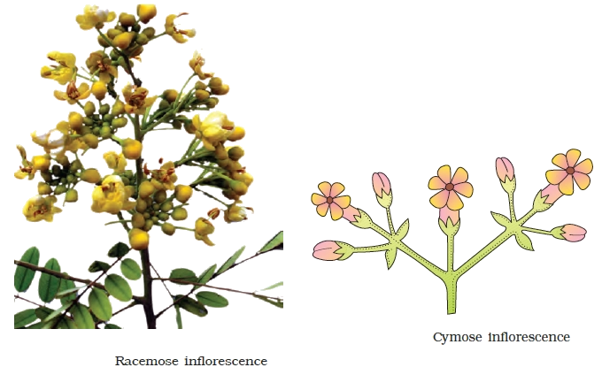
🎯Key Concepts
- 🌿Main axis continues growth → racemose inflorescence.
- 🌸Main axis ends in a flower (limited growth) → cymose inflorescence.
- ⬆️Acropetal succession: older flowers at base, younger towards apex (typical of racemose).
- ⬇️Basipetal order: older flowers at apex/centre, younger towards base/periphery (typical of cymose).
- 🧠Scoring links: acropetal ↔ racemose, basipetal ↔ cymose.
🔎RACEMOSE INFLORESCENCE (INDETERMINATE)
- Main axis continues to grow (does not end in a flower).
- Flowers are borne laterally on the axis.
- Flowering shows acropetal succession: older at base, younger near apex.
- Since apex keeps growing, number of flowers is not fixed (in principle).
⚙️CYMOSE INFLORESCENCE (DETERMINATE)
- Main axis terminates in a flower; growth becomes limited.
- Subsequent flowers develop on lateral branches below the terminal flower.
- Flowering shows basipetal order: oldest at apex/centre, younger towards base/periphery.
- Often gives a definite flower-number pattern for a given cymose type.
⚖️Racemose vs Cymose Inflorescence
| Basis | Racemose | Cymose |
|---|---|---|
| Main axis growth | Continues growth (indeterminate) | Terminates in a flower (determinate) |
| Position of oldest flower | Older at base (lower part) | Oldest at apex/centre (terminal) |
| Sequence of flowering | Acropetal succession | Basipetal order |
| Youngest flower | Towards apex | Towards base/periphery |
| Exam cue phrase | Apex keeps growing | Apex becomes a flower |
✏️Solved Q&A
1
A student observes an inflorescence where the terminal bud becomes a flower, and younger flowers are present towards the base. Identify the type and justify using the correct order term.
Answer:
Terminal bud forming a flower means the main axis terminates → determinate growth.
Younger flowers towards base indicates basipetal order.
Determinate + basipetal are diagnostic for cymose inflorescence.
Terminal bud forming a flower means the main axis terminates → determinate growth.
Younger flowers towards base indicates basipetal order.
Determinate + basipetal are diagnostic for cymose inflorescence.
✓ It is cymose inflorescence because the main axis ends in a flower and flowers show basipetal order.
2
In an unknown plant, flowers near the base are mature/open, while buds are near the tip and the axis keeps elongating. Name the inflorescence type and state the succession.
Answer:
Axis elongation indicates the main axis continues growth (does not terminate in a flower).
Older flowers at base and younger towards tip is acropetal succession.
These features together indicate racemose inflorescence.
Axis elongation indicates the main axis continues growth (does not terminate in a flower).
Older flowers at base and younger towards tip is acropetal succession.
These features together indicate racemose inflorescence.
✓ It is racemose inflorescence with acropetal succession.
⭐Important Points
- Inflorescence asks for arrangement of flowers on floral axis, not arrangement of petals/sepals.
- Core discriminator: apex continues (racemose) vs apex terminates (cymose).
- Use exact terms: acropetal succession in racemose; basipetal order in cymose.
- Acropetal: younger towards apex; basipetal: younger towards base.
- Flower is a modified shoot; shoot apical meristem converts to floral meristem during flowering.
💡Memory Technique
“Mnemonic: Race to the apex, Cut at the top”
📌Quick Recap
Inflorescence = arrangement of flowers on floral axis.Racemose: main axis continues growth; flowers lateral; acropetal succession (younger towards apex).Cymose: main axis terminates in a flower; growth limited; basipetal order (younger towards base).Acropetal: younger towards apex; older towards base.Basipetal: younger towards base; older towards apex/centre.If shoot tip becomes a flower → flower is solitary.
Flower as reproductive unit: whorls, perianth, sexuality, symmetry, merosity, bracts, ovary position
FLOWER BASICS
📖Definition & Introduction
- Flower is the reproductive unit of angiosperms meant for sexual reproduction.
- A typical flower is borne on a stalk (pedicel) ending in thalamus/receptacle.
- Four whorls on thalamus (outer → inner): calyx, corolla, androecium, gynoecium.
- Calyx + corolla = accessory (non-reproductive) whorls; androecium + gynoecium = reproductive whorls.
- If calyx and corolla are indistinct, they form perianth (individual units called tepals).
🖼️Diagram
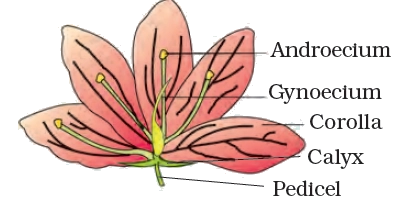
🎯Key Concepts
- 🧩Floral whorls: K (sepals), C (petals), A (stamens), G (carpels) arranged on thalamus.
- 🌿Bract: reduced leaf at base of pedicel; flowers with bracts = bracteate, without = ebracteate.
- ♀️Gynoecium: carpels; each carpel has stigma, style, ovary.
- ♂️Androecium: stamens; each stamen has filament + anther (pollen sacs).
- ⚥Bisexual flower has both A and G; unisexual has either A or G.
- 🧭Symmetry: actinomorphic (radial) vs zygomorphic (bilateral); asymmetric has no plane.
🔎SEXUALITY, SYMMETRY & MEROSITY
- Bisexual: both stamens and carpels present (A + G).
- Unisexual: only stamens (male) or only carpels (female).
- Actinomorphic: divisible into two equal halves in any radial plane (e.g., mustard, datura, chilli).
- Zygomorphic: divisible into two similar halves in only one vertical plane (e.g., pea, bean, Cassia).
- Asymmetric: no vertical plane gives two similar halves (e.g., canna).
⚙️OVARY POSITION (INSERTION ON THALAMUS)
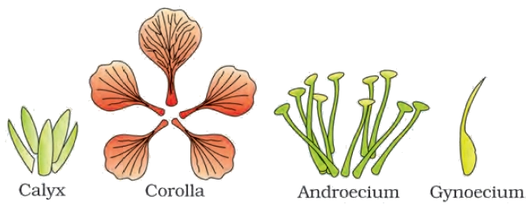
- Hypogynous: G at highest position; K, C, A below ovary → superior ovary (e.g., mustard, china rose, brinjal).
- Perigynous: thalamus forms a cup; K, C, A on rim; G central → half-inferior ovary (e.g., plum, rose, peach).
- Epigynous: thalamus grows upward enclosing ovary; K, C, A arise above → inferior ovary (e.g., guava, cucumber, sunflower ray florets).
⚖️Ovary Position: Hypogynous vs Perigynous vs Epigynous
| Basis | Hypogynous | Perigynous | Epigynous |
|---|---|---|---|
| Insertion of K, C, A | Below ovary | On rim of thalamus cup | Above ovary |
| Ovary type | Superior | Half-inferior | Inferior |
| Thalamus relation to ovary | No enclosure | Cup-shaped; ovary free in centre | Encloses ovary; fused |
| Examples (NCERT) | Mustard, china rose, brinjal | Plum, rose, peach | Guava, cucumber, sunflower (ray florets) |
✏️Solved Q&A
1
A flower can be cut into two equal halves in any plane passing through its centre. Identify the symmetry and give one NCERT example.
Answer:
If any radial plane through the centre gives two equal halves, symmetry is actinomorphic.
NCERT examples include mustard, datura, chilli.
If any radial plane through the centre gives two equal halves, symmetry is actinomorphic.
NCERT examples include mustard, datura, chilli.
✓ Actinomorphic (radial) symmetry; example: mustard (also datura/chilli).
2
In a flower, petals, sepals and stamens appear to arise from above the ovary. What is the flower type and ovary position? Give one example.
Answer:
When thalamus encloses ovary and other whorls arise above it, the flower is epigynous.
In epigynous flowers, ovary is inferior.
NCERT examples: guava or cucumber (also sunflower ray florets).
When thalamus encloses ovary and other whorls arise above it, the flower is epigynous.
In epigynous flowers, ovary is inferior.
NCERT examples: guava or cucumber (also sunflower ray florets).
✓ Epigynous flower with inferior ovary; example: guava/cucumber.
⭐Important Points
- Remember order of whorls on thalamus: K → C (or P) → A → G (outer to inner).
- Perianth is used when calyx and corolla are not distinct (e.g., lily).
- Accessory whorls (K, C/P) protect/attract; reproductive whorls (A, G) form gametes/ovules.
- Symmetry questions: actinomorphic (many planes) vs zygomorphic (one plane) vs asymmetric (none).
- Ovary position is defined by where K, C, A are inserted relative to ovary, not by stigma/style height.
💡Memory Technique
“Mnemonic pack: K-C-A-G + HPE”
📌Quick Recap
Flower = reproductive unit of angiosperms; borne on thalamus/receptacle.Whorls: calyx(sepals), corolla(petals), androecium(stamens), gynoecium(carpels).Perianth: calyx and corolla indistinct; units called tepals.Bisexual: A + G present; unisexual: only A or only G.Actinomorphic: many planes; zygomorphic: one plane; asymmetric: none.Merosity: trimerous/tetramerous/pentamerous = multiples of 3/4/5.Ovary position: hypogynous → superior; perigynous → half-inferior; epigynous → inferior.Bract present = bracteate; absent = ebracteate.
Flower as reproductive unit: parts, whorls, perianth and key descriptors
FLOWER FUNDAMENTALS
📖Definition & Introduction
- Flower = reproductive unit of angiosperms, specialised for sexual reproduction.
- A flower is borne on a stalk (pedicel); its swollen tip is thalamus/receptacle.
- Floral organs are arranged as whorls on the thalamus in concentric rings.
- Typical flower has 4 whorls: calyx, corolla, androecium, gynoecium.
- Accessory whorls: calyx + corolla; reproductive whorls: androecium + gynoecium.
🖼️Diagram
Typical flower: 4 whorls arranged on thalamus/receptacle; pedicel bears the flower; bract may be present at the base.
🎯Key Concepts
- 🟢Calyx (sepals): outermost; usually green; protects bud.
- 🟣Corolla (petals): usually coloured; attracts pollinators.
- 🟠Androecium: male whorl of stamens (anther + filament).
- 🔵Gynoecium: female whorl of carpels (stigma, style, ovary).
- 🌼Perianth: calyx and corolla not distinct (e.g., lily).
- ⚥Bisexual: both androecium and gynoecium present.
🔎KEY DESCRIPTORS (WHAT TO WRITE IN ANSWERS)
- Sexuality: bisexual (⚥) vs unisexual (♂/♀).
- Symmetry: actinomorphic (many planes) vs zygomorphic (one plane) vs asymmetric (none).
- Merosity: trimerous, tetramerous, pentamerous (based on appendage multiples).
- Bracts: bracteate (bract present) vs ebracteate (bract absent).
- Use one clear example: actinomorphic (mustard/datura), zygomorphic (pea), asymmetric (canna).
⚙️PERIANTH (SPECIAL CASE)
- When calyx and corolla look alike and are not distinct, call them perianth.
- Individual perianth members are often termed tepals in many texts.
- If stamens are attached to perianth, the term is epiphyllous (e.g., lily).
⚖️High-yield contrasts
| Basis | Bisexual (⚥) | Unisexual (♂/♀) |
|---|---|---|
| Reproductive whorls | Androecium + gynoecium both present | Only one present (either stamens or carpels) |
| Self-fertilisation within the same flower | Possible (if self-pollination occurs) | Not possible (male and female organs are in different flowers) |
| Example (NCERT) | Hibiscus / mustard (bisexual flowers) | Papaya (male and female flowers separate) |
✏️Solved Q&A
1
A flower has sepals and petals indistinguishable and arranged as coloured leaf-like parts. What term will you use for this outer floral covering? Give one example.
Answer:
If calyx and corolla are not distinct, they are collectively called perianth.
The similar units are commonly termed tepals.
Example: lily shows perianth (tepals).
If calyx and corolla are not distinct, they are collectively called perianth.
The similar units are commonly termed tepals.
Example: lily shows perianth (tepals).
✓ Perianth (members called tepals); example: lily.
2
A flower can be cut into two equal halves only in one vertical plane. Identify its symmetry and write one example.
Answer:
Only one vertical plane giving two equal halves indicates zygomorphic (bilateral) symmetry.
Examples: pea, bean, gulmohur, Cassia.
Only one vertical plane giving two equal halves indicates zygomorphic (bilateral) symmetry.
Examples: pea, bean, gulmohur, Cassia.
✓ Zygomorphic symmetry; example: pea.
⭐Important Points
- Swollen tip of pedicel is thalamus or receptacle; whorls arise from it.
- Typical 4 whorls in order: calyx → corolla → androecium → gynoecium (outer to inner).
- Accessory vs reproductive: calyx+corolla are accessory; androecium+gynoecium are reproductive.
- Perianth is used when calyx and corolla are not distinct (e.g., lily).
- Symmetry by planes giving equal halves: many (actinomorphic), one (zygomorphic), none (asymmetric).
💡Memory Technique
“Whorls order: "Ca-Co-An-Gy"”
📌Quick Recap
Flower = reproductive unit of angiosperms; organs borne on thalamus/receptacle.Pedicel = stalk of flower; thalamus/receptacle = swollen tip bearing whorls.4 whorls: calyx (sepals), corolla (petals), androecium (stamens), gynoecium (carpels).Perianth = calyx and corolla not distinct; members often called tepals (e.g., lily).Bisexual: androecium + gynoecium; unisexual: only one of them (staminate or pistillate).Symmetry: actinomorphic (any radial plane), zygomorphic (only one plane), asymmetric (no plane).Merosity: trimerous (×3), tetramerous (×4), pentamerous (×5).Bract at pedicel base: bracteate (present) / ebracteate (absent).
Fusion, forms, bud-arrangement (aestivation) and stamen cohesion/adhesion—high-yield morphology
FLORAL WHORLS DETAILS (CALYX, COROLLA, AESTIVATION, ANDROECIUM)
📖Definition & Introduction
- Floral whorls are concentric rings on thalamus: calyx (sepals), corolla (petals), androecium (stamens) and gynoecium (carpels).
- Calyx protects the flower in bud; sepals are generally green and leaf-like.
- Corolla attracts pollinators; petals are usually coloured and variously shaped.
- Fusion within a whorl is cohesion: sepals/petals/stamens may be united or free.
- Fusion between different whorls is adhesion: e.g., stamens attached to petals/perianth.
- Aestivation is the arrangement of sepals/petals in the floral bud within the same whorl.
🖼️Diagram
Whorls and stamen structure; use to map terms: sepals, petals, stamens.
🎯Key Concepts
- 🟩Polysepalous: sepals free; gamosepalous: sepals united.
- 🟥Polypetalous: petals free; gamopetalous: petals united.
- 🌀Corolla forms: tubular, bell/campanulate, funnel/infundibuliform, wheel/rotate.
- 🧩Aestivation types: valvate (touch), twisted (one-side overlap), imbricate (irregular overlap), vexillary (papilionaceous).
- 🧬Stamen = filament + anther; anther usually bilobed with 2 pollen sacs/lobe (total 4).
- 🔗Stamen cohesion: polyandrous (free) or mono/di/polyadelphous (filaments in 1/2/many bundles).
🔎CALYX & COROLLA: FUSION AND FORMS
- Calyx: sepals protect bud; may be persistent in some fruits.
- Gamosepalous: sepals united; polysepalous: sepals free.
- Corolla: petals attract pollinators; may be gamopetalous or polypetalous.
- Common corolla forms: tubular, bell, funnel, wheel.
- If calyx and corolla are not distinct → perianth (segments called tepals).
⚙️AESTIVATION: TYPES + KEY EXAMPLES
- Valvate: margins just touch; no overlap (e.g., Calotropis).
- Twisted: each petal overlaps next on one side (e.g., China rose, cotton, okra).
- Imbricate: overlap irregular; not one-direction (e.g., Cassia, gulmohur).
- Vexillary: standard overlaps wings, which overlap keel (pea/bean).
- Aestivation is described for sepals or petals in bud stage.
⚖️High-yield contrasts in floral whorls
| Basis | Type 1 | Type 2 |
|---|---|---|
| Calyx (sepals) | Polysepalous Sepals free | Gamosepalous Sepals united |
| Corolla (petals) | Polypetalous Petals free | Gamopetalous Petals united |
| Fusion meaning | Cohesion Within same whorl | Adhesion Between different whorls |
| Stamens (union among themselves) | Polyandrous Stamens free | Mono/Di/Polyadelphous Filaments united into 1/2/many bundles |
✏️Solved Q&A
1
A flower has five petals where one large petal overlaps two lateral petals, and these overlap two small anterior petals. Identify aestivation and name the petals in order.
Answer:
The given overlap pattern matches vexillary (papilionaceous) aestivation.
Largest posterior petal = standard; lateral petals = wings; two smallest anterior petals form the keel.
Overlap order: standard overlaps wings, wings overlap keel.
The given overlap pattern matches vexillary (papilionaceous) aestivation.
Largest posterior petal = standard; lateral petals = wings; two smallest anterior petals form the keel.
Overlap order: standard overlaps wings, wings overlap keel.
✓ Aestivation: vexillary; petals by overlap: standard → wings → keel.
2
In brinjal, stamens are attached to petals. What is this condition called? Is it cohesion or adhesion? Explain briefly.
Answer:
Stamens attached to petals is the epipetalous condition.
Adhesion = union between different whorls (androecium + corolla).
Cohesion would mean stamens united among themselves (e.g., mono/di/polyadelphous).
Stamens attached to petals is the epipetalous condition.
Adhesion = union between different whorls (androecium + corolla).
Cohesion would mean stamens united among themselves (e.g., mono/di/polyadelphous).
✓ Condition: epipetalous; it is adhesion (between corolla and androecium).
⭐Important Points
- Calyx = sepals; corolla = petals; both are accessory whorls.
- Remember: gamo- = united; poly- = free (sepals/petals).
- Aestivation is described within the same whorl and in bud.
- Valvate vs twisted: touch only vs one-direction overlap.
- Stamen: filament + anther; anther typically bilobed and tetrasporangiate (4 pollen sacs).
💡Memory Technique
“Mnemonic: VaTIm-VeSWiKe”
📌Quick Recap
Polysepalous = sepals free; gamosepalous = sepals united.Polypetalous = petals free; gamopetalous = petals united.Aestivation = arrangement of sepals/petals in bud: valvate, twisted, imbricate, vexillary.Androecium = stamens; stamen = filament + bilobed anther; usually 4 pollen sacs.Epipetalous (stamens on petals) and epiphyllous (stamens on perianth) are adhesion.Monoadelphous/diadelphous/polyadelphous = filaments united into 1/2/many bundles; polyandrous = stamens free.
Classify flowers by where other whorls arise relative to the ovary on the thalamus
OVARY POSITION TYPES
📖Definition & Introduction
- Ovary position is decided by the position of calyx, corolla, androecium w.r.t. ovary on the thalamus (receptacle).
- If other whorls arise below the ovary → hypogynous → ovary superior.
- If other whorls arise from the rim of a cup-shaped thalamus around ovary → perigynous → ovary half inferior (semi-inferior).
- If thalamus encloses and fuses with ovary; other whorls appear above → epigynous → ovary inferior.
- This character is frequently asked in examples and in interpreting floral formula (superior/inferior ovary symbols).
🖼️Diagram
Three flower types based on where other whorls arise relative to the ovary on the thalamus.
🎯Key Concepts
- 📍Look at the insertion point of sepals/petals/stamens on the thalamus.
- ⬆️Hypogynous: gynoecium appears highest; other whorls below it.
- 🧪Perigynous: thalamus forms a cup; ovary lies inside but is not fused to cup.
- 🔗Epigynous: thalamus cup fuses with ovary wall; other whorls above.
- 🧠Ovary type names: superior (hypogynous), half inferior (perigynous), inferior (epigynous).
🔎HOW TO IDENTIFY QUICKLY (EXAM METHOD)
- Find the ovary and observe the insertion level of sepals, petals and stamens.
- All whorls below ovary → hypogynous → ovary superior.
- Whorls on rim of thalamus cup; ovary inside cup but free → perigynous → half inferior.
- Whorls above ovary because thalamus margin grows upward and fuses with ovary → epigynous → ovary inferior.
⚙️STANDARD EXAMPLES TO MEMORISE
- Hypogynous (superior ovary): mustard (also china rose, brinjal).
- Perigynous (half inferior ovary): rose (also plum, peach).
- Epigynous (inferior ovary): guava, cucumber, sunflower ray florets.
⚖️Hypogynous vs Perigynous vs Epigynous (based on thalamus)
| Basis | Hypogynous | Perigynous | Epigynous |
|---|---|---|---|
| Position of calyx, corolla, androecium | Below ovary | On rim of thalamus cup (same level as ovary) | Above ovary |
| Ovary type | Superior | Half inferior (semi-inferior) | Inferior |
| Role of thalamus | Does not enclose ovary | Forms cup around ovary; usually not fused | Encloses ovary completely and fuses with it |
| Position of gynoecium (NCERT wording idea) | Gynoecium highest | Gynoecium central | Gynoecium appears below other whorls |
| Examples (NCERT) | Mustard | Rose | Guava, cucumber, sunflower ray florets |
✏️Solved Q&A
1
A flower shows sepals, petals and stamens arising from a common point below the ovary. Classify the flower and state ovary type.
Answer:
Other whorls arise below ovary on the thalamus.
This condition is hypogynous.
In hypogynous flowers, ovary is superior.
Other whorls arise below ovary on the thalamus.
This condition is hypogynous.
In hypogynous flowers, ovary is superior.
✓ Hypogynous flower with a superior ovary.
2
In a flower, the thalamus margin grows upward to enclose the ovary and fuses with it; sepals, petals and stamens appear to arise above the ovary. Identify the type and give one NCERT example.
Answer:
Thalamus enclosing the ovary and fusing with it indicates epigynous condition.
Epigynous flowers have an inferior ovary.
NCERT examples include guava, cucumber, and ray florets of sunflower.
Thalamus enclosing the ovary and fusing with it indicates epigynous condition.
Epigynous flowers have an inferior ovary.
NCERT examples include guava, cucumber, and ray florets of sunflower.
✓ Epigynous flower with inferior ovary; example: guava.
⭐Important Points
- Basis is always relative position of calyx, corolla and androecium w.r.t. ovary on the thalamus.
- Hypogynous → gynoecium highest → ovary superior → example: mustard.
- Perigynous → gynoecium central; whorls on rim of thalamus cup → ovary half inferior → example: rose.
- Epigynous → thalamus encloses + fuses with ovary; whorls above → ovary inferior → examples: guava, cucumber, ray florets of sunflower.
- Key phrase for epigynous: thalamus margin grows upward, encloses ovary completely and fuses with it.
💡Memory Technique
“Mnemonic: H–P–E = Below–Rim–Above”
📌Quick Recap
Hypogynous: calyx, corolla, androecium arise below ovary → ovary superior → examples: mustard, china rose, brinjal.Perigynous: calyx, corolla, androecium arise from rim of cup-shaped thalamus → ovary half inferior → examples: rose, plum, peach.Epigynous: thalamus margin grows upward, encloses ovary and fuses → other whorls above → ovary inferior → examples: guava, cucumber, ray florets of sunflower.Reference structure for this classification is the thalamus (receptacle).
Sepals vs petals, free vs fused, corolla shapes, and bud-arrangement (valvate→vexillary)
CALYX, COROLLA & AESTIVATION
📖Definition & Introduction
- Calyx and corolla are accessory floral whorls; their bud arrangement is called aestivation.
- Calyx = outermost whorl; units are sepals, usually green, protect flower in bud stage.
- Corolla = whorl of petals, usually coloured, attracts pollinators.
- Polysepalous/Polypetalous: sepals/petals free from each other.
- Gamosepalous/Gamopetalous: sepals/petals united (fused) within the same whorl.
- Aestivation = arrangement of sepals/petals in a floral bud with respect to other members of same whorl.
🖼️Diagram
Accessory whorls (calyx, corolla) and the four key aestivation patterns asked in exams.
🎯Key Concepts
- 🟩Polysepalous vs gamosepalous is about fusion within calyx only.
- 🟥Polypetalous vs gamopetalous is about fusion within corolla only.
- 🌀Twisted aestivation: each member overlaps the next in the same direction.
- 🧩Imbricate aestivation: overlap present but no fixed order of overlap.
- 🚩Vexillary (papilionaceous): standard overlaps wings; wings overlap keel.
🔎CALYX & COROLLA: FREE vs UNITED (FUSION WITHIN WHORL)
- Polysepalous: sepals free; calyx members distinct.
- Gamosepalous: sepals united; calyx appears as a cup/tube (often persistent in many flowers).
- Polypetalous: petals free; individual petals clearly separable.
- Gamopetalous: petals united; corolla forms a tube/bell/funnel etc.
- In perianth (e.g., lily), calyx and corolla are not distinct (tepals).
⚙️COROLLA SHAPES + AESTIVATION TYPES (WITH EXAMPLES)
- Corolla shapes: tubular (tube-like), campanulate (bell), funnel-shaped (widens gradually), wheel-shaped (flat, spreading).
- Valvate: margins just touch; no overlap; example: Calotropis.
- Twisted: one margin overlaps next in the same direction; examples: china rose, lady's finger, cotton.
- Imbricate: overlap present but irregular/no definite direction; examples: Cassia, gulmohur.
- Vexillary (papilionaceous): standard overlaps wings; wings overlap keel; examples: pea, bean.
⚖️AESTIVATION: HOW TO IDENTIFY IN BUD
| Type | Key feature in bud | Typical example |
|---|---|---|
| Valvate | Margins touch; no overlap | Calotropis |
| Twisted | Overlap in definite direction (each overlaps next) | China rose / cotton |
| Imbricate | Overlap but no fixed order | Cassia / gulmohur |
| Vexillary | Standard overlaps wings; wings overlap keel | Pea / bean |
✏️Solved Q&A
1
A flower bud shows petals where each petal overlaps the next petal on the same side consistently. Name the aestivation and give one example plant.
Answer:
Consistent, one-direction overlap indicates twisted aestivation (not imbricate).
Example plants include china rose, lady's finger, cotton.
Consistent, one-direction overlap indicates twisted aestivation (not imbricate).
Example plants include china rose, lady's finger, cotton.
✓ Twisted aestivation; example: china rose (Hibiscus) or cotton.
2
In pea flower, identify the aestivation type and describe the overlap sequence of petals.
Answer:
Pea has vexillary (papilionaceous) aestivation.
The standard (largest) overlaps the two wings, and wings overlap the keel.
Pea has vexillary (papilionaceous) aestivation.
The standard (largest) overlaps the two wings, and wings overlap the keel.
✓ Vexillary aestivation; standard → wings → keel.
⭐Important Points
- Calyx (sepals) protects bud; corolla (petals) attracts pollinators.
- Prefixes: poly- = free; gamo- = fused (for both sepals and petals).
- Aestivation is described within the same whorl (sepals among sepals or petals among petals).
- Twisted has a definite direction of overlap; imbricate has no definite direction.
- Vexillary is a special imbricate pattern typical of Fabaceae (pea/bean).
💡Memory Technique
“Mnemonic: "VaT Im VeX" for types”
📌Quick Recap
Calyx = sepals; Corolla = petals (both are accessory whorls).Polysepalous/Polypetalous: members free; Gamosepalous/Gamopetalous: members fused.Corolla shapes: tubular, campanulate (bell), funnel-shaped, wheel-shaped.Aestivation = arrangement of sepals/petals in bud within the same whorl.Valvate: touch, no overlap; Twisted: definite-direction overlap; Imbricate: overlap, no order; Vexillary: standard → wings → keel.
Carpel parts + fusion state + ovule arrangement inside ovary
GYNOECIUM AND PLACENTATION
📖Definition & Introduction
- Gynoecium is the female reproductive whorl made of one or more carpels.
- A carpel has stigma (pollen reception), style (passage), ovary (contains ovules).
- Placenta is the tissue inside ovary where ovules attach.
- Placentation is the arrangement of ovules on placenta within the ovary.
- Carpels free → apocarpous; carpels fused → syncarpous.
- After fertilisation: ovule → seed and ovary → fruit.
🖼️Diagram
Carpel parts (stigma–style–ovary) and carpel fusion states (apocarpous vs syncarpous).
🎯Key Concepts
- 🧩Stigma is sticky/receptive; style links stigma to ovary; ovary encloses ovules.
- 🔗Apocarpous: each carpel forms its own ovary; Syncarpous: common ovary formed.
- 🏠Locule count often depends on septa formed by fused carpels (multilocular vs unilocular).
- 📌Placentation types are diagnosed by placenta position: suture, axis, wall, base, or free axis.
- 🌱Examples matter: pea (marginal), china rose/tomato/lemon (axile), mustard (parietal).
🔎CARPEL: WHAT EACH PART DOES
- Stigma: receptive surface; captures compatible pollen and supports germination.
- Style: connects stigma to ovary; pollen tube grows through transmitting tissue.
- Ovary: enlarged basal region; encloses locule(s), placenta and ovules.
- Ovule: develops into seed after fertilisation; number depends on species.
⚙️TYPES OF PLACENTATION (OVULE ARRANGEMENT)
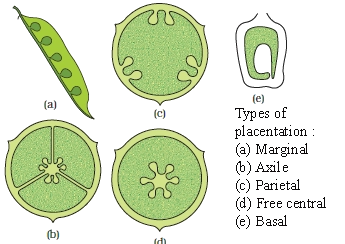
- Marginal: placenta along ventral suture; ovules in two rows; pea.
- Axile: placenta on central axis of multilocular ovary; china rose, tomato, lemon.
- Parietal: ovules on inner ovary wall; usually unilocular; false septum may form; mustard, Argemone.
- Free central: ovules on free central column; septa absent; Dianthus, Primrose.
- Basal: placenta at base; usually single ovule; sunflower, marigold.
⚖️APOCARPOUS vs SYNCARPOUS (CARPEL CONDITION)
| Basis | Apocarpous | Syncarpous |
|---|---|---|
| Carpels | Free from each other | Fused with each other |
| Ovary situation | Separate ovary for each carpel | Common ovary (often multilocular) |
| Examples | Lotus, rose | Mustard, tomato |
| Key exam cue | Many pistils may appear distinct | Single pistil with fused carpels |
✏️Solved Q&A
1
A flower has a unilocular ovary, ovules attached to inner ovary wall, and a false septum may develop. Identify the placentation and justify.
Answer:
Ovules on inner wall indicates parietal placentation.
Ovary is usually unilocular; apparent extra chambers can form by a false septum.
This matches classic examples like mustard.
Ovules on inner wall indicates parietal placentation.
Ovary is usually unilocular; apparent extra chambers can form by a false septum.
This matches classic examples like mustard.
✓ Parietal placentation.
2
In a dissected ovary, septa divide it into multiple locules and ovules are attached to a central column. Identify the placentation and give one example.
Answer:
Presence of septa and multilocular ovary suggests fused carpels with a central axis.
Ovules on central axis is diagnostic of axile placentation.
Examples include china rose or tomato.
Presence of septa and multilocular ovary suggests fused carpels with a central axis.
Ovules on central axis is diagnostic of axile placentation.
Examples include china rose or tomato.
✓ Axile placentation; example: tomato (or china rose/lemon).
⭐Important Points
- Gynoecium = one or more carpels; each carpel has stigma–style–ovary.
- Stigma is the receptive surface; style provides pathway for pollen tube to ovary.
- Ovules attach to placenta; placentation is a high-yield classification question.
- Axile placentation implies multilocular ovary with ovules on central axis.
- Parietal placentation: ovules on wall; ovary is usually unilocular, but may appear bi-/multilocular due to false septa.
💡Memory Technique
“Mnemonic: MAP-FB for placentation”
📌Quick Recap
Gynoecium is made of one or more carpels (female reproductive whorl).Carpel parts: stigma (receptive) → style (pollen-tube path) → ovary (houses ovules).Placenta = attachment region for ovules inside ovary; placentation = ovule arrangement.Apocarpous = carpels free (lotus, rose); Syncarpous = carpels fused (mustard, tomato).Marginal: ridge along ventral suture; Axile: central axis with septa; Parietal: inner wall.Free central: central column without septa; Basal: placenta at base, usually single ovule.After fertilisation: ovule → seed and ovary → fruit.
Stamen parts + anther lobes/pollen sacs + staminode + adhesion & cohesion terms
ANDROECIUM FEATURES
📖Definition & Introduction
- Androecium is the male reproductive whorl of a flower, composed of stamens.
- A stamen typically has a filament (stalk) and an anther (pollen-producing part).
- Anther is usually bilobed; each lobe generally contains two pollen sacs (microsporangia).
- Pollen grains are produced inside the pollen sacs.
- Staminode is a sterile (non-functional) stamen; present as a reduced/modified structure.
🖼️Diagram
Typical stamen showing filament, bilobed anther, and pollen sacs (microsporangia).
🎯Key Concepts
- 🧱Typical anther: 2 lobes × 2 pollen sacs per lobe → usually 4 pollen sacs.
- 🧷Adhesion: stamens united to other whorls (e.g., petals/perianth).
- 🪢Cohesion: stamens united among themselves (often by filaments) into bundles: -adelphous.
- 🌿Epipetalous: stamens attached to petals (e.g., brinjal).
- 🪷Epiphyllous: stamens attached to perianth (e.g., lily).
- 🧵Filament length may vary within a flower (e.g., mustard, Salvia).
🔎ANTHER & POLLEN SACS (EXAM CORE)
- Anther is usually bilobed (two thecae/lobes).
- Each lobe generally has two pollen sacs (total usually 4).
- Pollen sacs are the sites where pollen grains develop.
- Anther + filament together constitute one stamen.
⚙️ADHESION vs COHESION OF STAMENS (TERMS + EXAMPLES)
- Adhesion (different whorls): epipetalous = attached to petals (brinjal).
- Adhesion: epiphyllous = attached to perianth (lily).
- Polyandrous = stamens free from each other (no cohesion).
- Monadelphous = stamens united into one bundle (china rose).
- Diadelphous = stamens united into two bundles (pea).
⚖️ADHESION vs COHESION (ANDROECIUM: STAMENS)
| Basis | Adhesion | Cohesion |
|---|---|---|
| Meaning | Union of stamens with other whorls | Union among stamens themselves |
| Key terms | Epipetalous, Epiphyllous | -adelphous (bundles); Polyandrous = stamens free (no cohesion) |
| What unites? | Stamens + petals/perianth | Usually filaments unite into one/two/>2 bundles |
| Examples (NCERT) | Brinjal; Lily | China rose; Pea; Citrus (polyadelphous); Polyandrous condition occurs when stamens are free |
✏️Solved Q&A
1
A flower has stamens attached to petals, and stamens are not united with each other. Name the androecium conditions.
Answer:
Attachment to petals indicates adhesion called epipetalous.
Stamens free from each other indicates polyandrous condition (no cohesion).
Attachment to petals indicates adhesion called epipetalous.
Stamens free from each other indicates polyandrous condition (no cohesion).
✓ Epipetalous and polyandrous.
2
Differentiate: monadelphous, diadelphous and polyadelphous androecium with one example each.
Answer:
Monadelphous: filaments united into one bundle (e.g., china rose).
Diadelphous: filaments united into two bundles (e.g., pea).
Polyadelphous: filaments united into more than two bundles (e.g., citrus).
Monadelphous: filaments united into one bundle (e.g., china rose).
Diadelphous: filaments united into two bundles (e.g., pea).
Polyadelphous: filaments united into more than two bundles (e.g., citrus).
✓ Monadelphous (china rose), diadelphous (pea), polyadelphous (citrus).
⭐Important Points
- Androecium is the male whorl; its unit is the stamen.
- Typical stamen parts: filament (stalk) + anther (pollen-bearing).
- Anther is usually bilobed; each lobe commonly has two pollen sacs.
- Staminode = sterile stamen; do not call it carpel/ovary.
- Epipetalous/epiphyllous are adhesion terms; -adelphous are cohesion terms.
💡Memory Technique
“EPI sticks to something; ADELPH makes bundles”
📌Quick Recap
Androecium = male reproductive whorl; composed of stamens.Stamen = filament + anther.Anther usually bilobed; each lobe usually has 2 pollen sacs (total 4).Staminode = sterile (non-functional) stamen.Adhesion: epipetalous (petals), epiphyllous (perianth).Cohesion: monadelphous (1 bundle), diadelphous (2), polyadelphous (>2); polyandrous = stamens free.
Fruit formation, pericarp layers, parthenocarpy, and drupe: mango & coconut
FRUIT (BASICS) + DRUPE (MANGO & COCONUT)
📖Definition & Introduction
- Fruit is the mature/ripened ovary of a flower, usually formed after fertilisation.
- After fertilisation: ovary → fruit and ovules → seeds.
- Fruit wall is called pericarp (derived mainly from ovary wall). Fruits usually contain pericarp + seeds, but parthenocarpic fruits are typically seedless.
- If fruit forms without fertilisation, it is called a parthenocarpic fruit (generally seedless; may have abortive seeds).
- When pericarp is thick and fleshy, it differentiates into epicarp, mesocarp, endocarp.
🖼️Diagram
Fruit = mature ovary; fleshy pericarp differentiates into epicarp–mesocarp–endocarp.
🎯Key Concepts
- 1Fertilisation triggers ovary maturation into fruit; ovules become seeds.
- 2Pericarp = ovary wall; may be dry or fleshy; fleshy pericarp has 3 layers.
- 3Drupe: develops from monocarpellary superior ovary; typically one-seeded (NCERT examples: mango, coconut).
- 4In coconut drupe, mesocarp is fibrous (coir); endocarp forms hard shell.
- 5Parthenocarpy produces fruits without fertilisation; generally seedless or with few/abortive seeds.
🔎HOW A FRUIT FORMS (EXAM ESSENTIAL)
- Post-fertilisation change: ovary enlarges and ripens into fruit; ovules become seeds.
- Fruit wall is called pericarp (derived mainly from ovary wall).
- Pericarp may be dry (thin) or fleshy (thick, juicy).
- In fleshy fruits: epicarp = outer skin; mesocarp = middle; endocarp = inner layer.
⚙️DRUPE: MANGO vs COCONUT
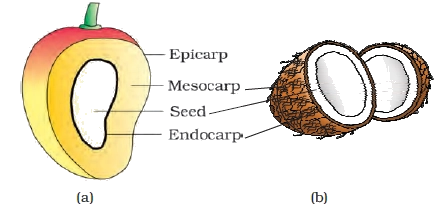
- Drupe develops from a monocarpellary, superior ovary; usually one-seeded (NCERT examples: mango, coconut).
- Mango: epicarp thin; mesocarp fleshy edible; endocarp hard stony around seed.
- Coconut: epicarp = outer skin; mesocarp fibrous (coir); endocarp stony (hard shell).
- Key idea: in drupes, endocarp is typically hard (stone/shell) protecting the seed.
⚖️Mango Drupe vs Coconut Drupe
| Basis | Mango | Coconut |
|---|---|---|
| Fruit type | Drupe | Drupe |
| Ovary origin | Monocarpellary, superior | Monocarpellary, superior |
| Seed number | One-seeded | One-seeded |
| Epicarp | Thin outer skin (peel) | Outer skin (epicarp/exocarp) |
| Mesocarp | Fleshy, edible | Fibrous (coir) |
| Endocarp | Stony hard (stone) around seed | Stony hard (shell) around seed |
✏️Solved Q&A
1
A fruit develops even though fertilisation did not occur. What is it called, and what is the key feature regarding seeds?
Answer:
Fruit formation without fertilisation is termed parthenocarpy.
Since ovules are not fertilised, seeds are usually absent or abortive.
Fruit formation without fertilisation is termed parthenocarpy.
Since ovules are not fertilised, seeds are usually absent or abortive.
✓ Parthenocarpic fruit; generally seedless (or with abortive seeds).
2
A student cuts a mango and observes: thin outer peel, thick edible pulp, and a hard stony layer around the seed. Identify the fruit type and label the pericarp layers.
Answer:
Hard stony inner layer + fleshy middle layer indicates a drupe.
Thin peel = epicarp; edible pulp = mesocarp; stony layer = endocarp.
Hard stony inner layer + fleshy middle layer indicates a drupe.
Thin peel = epicarp; edible pulp = mesocarp; stony layer = endocarp.
✓ Fruit type: drupe; layers: epicarp (thin), mesocarp (fleshy), endocarp (stony).
⭐Important Points
- Fruit = mature ovary (standard NCERT exam definition).
- After fertilisation: ovules → seeds and ovary → fruit.
- Pericarp originates mainly from ovary wall; may be dry or fleshy.
- Fleshy pericarp shows epicarp–mesocarp–endocarp differentiation.
- Parthenocarpic fruit forms without fertilisation (generally seedless).
💡Memory Technique
“Mnemonic: EME for pericarp layers”
📌Quick Recap
Fruit: mature ovary of a flower (usually after fertilisation).After fertilisation: ovary → fruit; ovules → seeds.Pericarp: fruit wall derived mainly from ovary wall; may be dry or fleshy.Fleshy pericarp layers: epicarp (outer) → mesocarp (middle) → endocarp (inner).Parthenocarpy: fruit formation without fertilisation; generally seedless (or with abortive seeds).Drupe (mango, coconut): typically one-seeded; endocarp is hard/stony; mesocarp may be fleshy (mango) or fibrous (coconut).
Carpel structure, apocarpous vs syncarpous, placentation types, and fruit–seed formation (dicot & monocot)
GYNOECIUM • PLACENTATION • FRUIT • SEED
📖Definition & Introduction
- Gynoecium is the female reproductive whorl, made of one or more carpels.
- A carpel has stigma (pollen receptive), style (connects), and ovary (contains ovules).
- Placenta is the tissue inside ovary to which ovules attach; arrangement is placentation.
- Apocarpous: carpels free; Syncarpous: carpels fused into one pistil.
- After fertilisation: ovary → fruit; ovules → seeds (with embryo and seed coat).
🖼️Diagram
Carpel parts + placentation overview + post-fertilisation changes.
🎯Key Concepts
- 🧷Ovules attach to placenta inside ovary; placentation is a key diagnostic floral character.
- 🧩Syncarpous ovaries may be uni-/bi-/multilocular depending on septa formation.
- 🌱Seed = seed coat + embryo; endosperm may persist (endospermic) or be used up.
- 🍉Fruit wall is pericarp; in fleshy fruits it differentiates into epi-, meso-, endocarp.
🔎CARPEL: PARTS & APOCARPOUS / SYNCARPOUS
- Stigma: sticky/receptive surface for pollen; usually at tip of carpel.
- Style: slender stalk; provides path for pollen tube to ovary.
- Ovary: basal swollen part; encloses ovules attached on placenta.
- Apocarpous gynoecium: carpels free (e.g., lotus, rose).
- Syncarpous gynoecium: carpels fused (e.g., mustard, tomato).
⚙️PLACENTATION (ARRANGEMENT OF OVULES IN OVARY)
- Marginal: placenta forms ridge along ventral suture; ovules in two rows (pea).
- Axile: placenta on central axis; ovary multilocular (china rose, tomato, lemon).
- Parietal: ovules on inner wall; ovary one-chambered; false septum may form (mustard, Argemone).
- Free central: ovules on central column; septa absent (Dianthus, Primrose).
- Basal: placenta at base; usually single ovule (sunflower, marigold).
⚖️Apocarpous vs Syncarpous Gynoecium
| Basis | Apocarpous | Syncarpous |
|---|---|---|
| Carpels | Free (separate) | Fused (united) |
| Pistils | Many pistils may appear | One pistil (compound) |
| Examples | Lotus, rose | Mustard, tomato |
| Exam clue | Each carpel shows its own ovary/style/stigma | Common ovary; multiple carpels form one structure |
✏️Solved Q&A
1
Mustard ovary may look two-chambered in section. Is its placentation axile or parietal? Explain.
Answer:
In mustard, ovules arise from inner wall of the ovary: this indicates parietal placentation.
The ovary is basically unilocular (one-chambered).
A false septum can develop, making it appear bilocular, but the placenta is still on the wall (not on a true central axis).
In mustard, ovules arise from inner wall of the ovary: this indicates parietal placentation.
The ovary is basically unilocular (one-chambered).
A false septum can develop, making it appear bilocular, but the placenta is still on the wall (not on a true central axis).
✓ Parietal placentation; apparent bilocularity is due to a false septum.
2
In a cereal grain (maize), why is the seed coat described as fused with the fruit wall, and what special embryo features help identify a monocot seed?
Answer:
In cereals, the fruit is a caryopsis-type structure where the pericarp (fruit wall) adheres tightly to the seed coat, so they appear fused.
Monocot embryo shows a single cotyledon (scutellum) and protective sheaths: coleoptile over plumule and coleorhiza over radicle.
A bulky endosperm persists; its outer region has a protein-rich aleurone layer.
In cereals, the fruit is a caryopsis-type structure where the pericarp (fruit wall) adheres tightly to the seed coat, so they appear fused.
Monocot embryo shows a single cotyledon (scutellum) and protective sheaths: coleoptile over plumule and coleorhiza over radicle.
A bulky endosperm persists; its outer region has a protein-rich aleurone layer.
✓ Seed coat is fused with pericarp in cereals; monocot embryo is identified by scutellum + coleoptile + coleorhiza with persistent endosperm.
⭐Important Points
- Placentation is determined by where ovules attach, not by ovary shape alone.
- Axile placentation requires a multilocular ovary with a central axis.
- Parietal placentation can appear bilocular due to a false septum (mustard).
- Fruit wall = pericarp; in fleshy fruits: epicarp, mesocarp, endocarp.
- Dicot seeds often have testa + tegmen, hilum and micropyle as landmarks.
💡Memory Technique
“Placentation mnemonic: MAP-FB”
📌Quick Recap
Gynoecium = female reproductive whorl made of one or more carpels.Carpel = stigma + style + ovary; ovary bears ovules on placenta.Apocarpous: carpels free; Syncarpous: carpels fused.Placentation = arrangement of ovules within the ovary (diagnostic floral character).Placentation types: marginal (pea), axile (tomato), parietal (mustard), free central (Primrose), basal (sunflower).After fertilisation: ovary → fruit; ovules → seeds.Fruit wall = pericarp; fleshy pericarp = epicarp + mesocarp + endocarp.Dicot seed: testa + tegmen; hilum, micropyle; embryo with 2 cotyledons.
Seed coat + embryo; dicot vs monocot (cereals) with endosperm and protective sheaths
SEED STRUCTURE
📖Definition & Introduction
- Seed is a fertilised ovule that develops into a unit with seed coat and embryo.
- Embryo has an embryonal axis with radicle (root future) and plumule (shoot future).
- Embryo bears cotyledons: two in dicot seeds, one in monocot seeds.
- Seed coat protects embryo; made of outer testa and inner tegmen (dicots typical).
- Hilum is the attachment scar; micropyle is the small pore near hilum for water/gas entry.
- Endosperm may persist (endospermous) or be used up (non-endospermous) at maturity.
🖼️Diagram
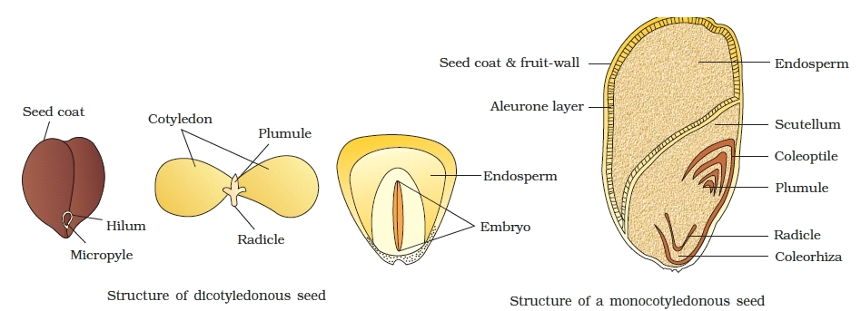
🎯Key Concepts
- 🛡️Seed coat = protection; dicots usually show distinct testa and tegmen.
- 📍Hilum marks seed attachment; micropyle is the pore above it.
- 🧠Embryonal axis ends: radicle (root) and plumule (shoot).
- 🍽️Food reserve: cotyledons (many dicots) or endosperm (many monocots, castor).
- 🌽Cereals: seed coat fused with fruit wall; embryo has scutellum, coleoptile, coleorhiza.
🔎COMPONENTS OF A SEED (EXAM TERMS)
- Seed coat: protective covering derived from integuments; limits mechanical injury and desiccation.
- Testa = outer layer; tegmen = inner layer (commonly described in dicot seeds).
- Hilum: scar showing point of attachment to fruit via funicle.
- Micropyle: pore for water uptake and gas exchange; radicle often emerges near it.
- Embryo: embryonal axis + cotyledon(s); axis bears radicle and plumule.
⚙️ENDOSPERM STATUS & SPECIAL CEREAL FEATURES
- Endospermous (albuminous) seeds retain endosperm at maturity; e.g., wheat, maize; also castor (dicot).
- Non-endospermous (exalbuminous) seeds use up endosperm; food stored in cotyledons; e.g., pea, gram, bean.
- Cereals: seed coat is membranous and usually fused with fruit wall (caryopsis).
- Cereals: endosperm outer protein-rich aleurone layer surrounds starchy endosperm.
- Cereal embryo: single cotyledon = scutellum; plumule in coleoptile, radicle in coleorhiza.
⚖️DICOT SEED vs MONOCOT SEED (CEREALS)
| Basis | Dicot seed (e.g., gram/pea; castor) | Monocot seed (cereals e.g., maize/wheat) |
|---|---|---|
| Cotyledons | Two cotyledons | One cotyledon (scutellum) |
| Embryo size/position | Embryo usually relatively large in many non-endospermous dicots (e.g., pea/gram); embryo is smaller relative to seed in endospermous dicots like castor | Small embryo; lateral on one side of endosperm (germ region) |
| Food reserve (common) | Cotyledons in many legumes; endosperm in castor | Bulky endosperm stores food |
| Endosperm at maturity | Often absent in legumes; present in castor | Generally present (endospermous) |
| Seed coat | Distinct testa + tegmen (typical) | Membranous; often fused with fruit wall |
| Special coverings | No coleoptile/coleorhiza | Coleoptile (plumule sheath) and coleorhiza (radicle sheath) |
✏️Solved Q&A
1
A student observes a seed with a single cotyledon-like shield, bulky endosperm, and two sheath-like coverings around embryonal ends. Identify the seed type and name the structures.
Answer:
Single shield-like cotyledon indicates a monocot cereal embryo (cotyledon called scutellum).
Bulky reserve tissue indicates persistent endosperm (an endospermous seed).
Protective sheaths: coleoptile around plumule and coleorhiza around radicle.
Single shield-like cotyledon indicates a monocot cereal embryo (cotyledon called scutellum).
Bulky reserve tissue indicates persistent endosperm (an endospermous seed).
Protective sheaths: coleoptile around plumule and coleorhiza around radicle.
✓ Monocot cereal seed (e.g., maize/wheat); scutellum, coleoptile, coleorhiza; endospermous.
2
Why are gram/pea seeds called non-endospermous while castor is endospermous, though both are dicots?
Answer:
In many dicots like gram/pea/bean, endosperm formed after double fertilisation is completely consumed during embryo development; mature seed stores food mainly in cotyledons.
In castor, endosperm persists in mature seed as a food-storing tissue.
In many dicots like gram/pea/bean, endosperm formed after double fertilisation is completely consumed during embryo development; mature seed stores food mainly in cotyledons.
In castor, endosperm persists in mature seed as a food-storing tissue.
✓ Non-endospermous seeds lack endosperm at maturity (food in cotyledons); castor retains endosperm, so it is endospermous.
⭐Important Points
- Seed = seed coat + embryo; embryo has embryonal axis with radicle and plumule.
- Testa (outer) and tegmen (inner) are key dicot seed-coat terms.
- Hilum is attachment scar; micropyle is pore near hilum (common diagram question).
- Endospermous vs non-endospermous classification depends on endosperm persistence at maturity.
- Cereals: caryopsis feature—seed coat fused with fruit wall; endosperm with aleurone layer.
💡Memory Technique
“Mnemonic: \'Hi Micro\' & \'Co-Co\' for cereals”
📌Quick Recap
Seed components: seed coat + embryo; endosperm present if retained at maturity.Embryonal axis ends: radicle (future root) and plumule (future shoot).Dicot seed coat layers (typical): testa (outer) and tegmen (inner).Hilum = attachment scar; micropyle = pore near hilum for water entry and gas exchange.Endospermous (albuminous): endosperm persists (wheat, maize, castor).Non-endospermous (exalbuminous): endosperm absent in mature seed (pea, gram, bean).Cereals (caryopsis): seed coat often fused with fruit wall; endosperm outer aleurone layer; embryo with scutellum, coleoptile, coleorhiza.
Symbolic + diagrammatic summary of a flower for quick identification
FLORAL FORMULA AND DIAGRAM
📖Definition & Introduction
- Floral formula is a symbolic representation of floral characters (sex, symmetry, whorls, number, fusion/cohesion, adhesion, ovary position).
- Floral diagram is a top-view diagram showing number and arrangement of floral parts and their relationships (fusion/cohesion and adhesion).
- Both summarise diagnostic floral features used in identification and classification of angiosperm families.
- In a floral diagram, whorls are shown from outside to inside: calyx → corolla/perianth → androecium → gynoecium (centre).
- In a floral diagram, the position of the mother axis (posterior side) is marked at the top (commonly by a dot/short line).
🖼️Diagram
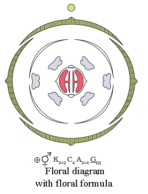
🎯Key Concepts
- 🔣Main symbols: Br (bracteate), K (calyx), C (corolla), P (perianth), A (androecium), G (gynoecium)
- ⚥Sex symbols: ♂ male, ♀ female, ⚥ bisexual
- ⭕Symmetry: ⊕ actinomorphic; % zygomorphic
- 🧷Fusion/cohesion (within a whorl) is shown by brackets, e.g., K(5), C(5)
- 🔗Adhesion (between whorls) is shown by a line connecting/placed above the symbols of the parts involved (e.g., between C and A for epipetalous)
- ⬆️Ovary position in floral formula: bar below G = superior ovary; bar above G = inferior ovary
🔎HOW TO WRITE A FLORAL FORMULA (EXAM STEPS)
- Start with sex: ♂ / ♀ / ⚥.
- Add symmetry symbol: ⊕ (actinomorphic) or % (zygomorphic).
- Mention bract condition if given: Br (bracteate) or Ebr (ebracteate).
- Write whorls in order: K, C (or P), A, G.
- Show number of members; show fusion by brackets: K(5), C(5).
⚙️HOW TO READ/DRAW A FLORAL DIAGRAM (SCORING POINTS)
- Mark the mother axis at the top to indicate posterior side.
- Draw whorls from outside to inside: calyx → corolla/perianth → androecium → gynoecium (centre).
- Show number of parts by placing that many units in each whorl (e.g., 5 sepals, 5 petals).
- Indicate fusion/cohesion (e.g., united sepals/petals) by connected outlines/common ring.
- Indicate adhesion (e.g., epipetalous stamens) by showing stamens attached to the corolla ring.
⚖️FLORAL FORMULA vs FLORAL DIAGRAM
| Basis | Floral formula | Floral diagram |
|---|---|---|
| Form | Symbols + numbers | Top-view sketch of whorls |
| Shows best | Quick summary of characters and counts | Relative position/arrangement and relationships |
| Fusion/adhesion | Brackets for fusion (cohesion); a line connecting/placed above the symbols involved indicates adhesion | Connected parts for fusion; attachments depict adhesion |
| Extra marking feature | Ovary position indicated with bar above/below G | Mother axis shown at top (commonly by a dot/short line) to indicate posterior side |
✏️Solved Q&A
1
In a floral formula, what does K(5) indicate?
Answer:
K denotes calyx (sepals).
Brackets around a number indicate fusion/cohesion within the same whorl.
K denotes calyx (sepals).
Brackets around a number indicate fusion/cohesion within the same whorl.
✓ K(5) means 5 sepals that are united (gamosepalous calyx).
2
A question states: "stamens epipetalous". How is this represented in a floral formula and in a floral diagram?
Answer:
Epipetalous means stamens are attached to petals (adhesion between A and C).
In floral formula, show a line connecting/placed above C and A to indicate adhesion.
In floral diagram, draw stamens attached to the corolla ring.
Epipetalous means stamens are attached to petals (adhesion between A and C).
In floral formula, show a line connecting/placed above C and A to indicate adhesion.
In floral diagram, draw stamens attached to the corolla ring.
✓ Show adhesion between C and A (line over/connecting C and A) and depict stamens attached to petals in the diagram.
⭐Important Points
- Floral formula and floral diagram together summarise floral characters used in identification and classification.
- Whorl order in diagram: calyx outermost, gynoecium at the centre.
- Brackets in formula indicate fusion/cohesion within a whorl.
- A line connecting/placed above symbols indicates adhesion between different whorls.
- Ovary position in formula: bar below G = superior ovary; bar above G = inferior ovary.
💡Memory Technique
“K–C–A–G: Outside to inside”
📌Quick Recap
Whorl sequence (formula/diagram): K → C (or P) → A → GBr = bracteate; Ebr = ebracteateSex symbols: ♂ male, ♀ female, ⚥ bisexualSymmetry symbols: ⊕ actinomorphic; % zygomorphicFusion/cohesion: brackets, e.g., K(5), C(5)Adhesion: show by a line connecting/placed above symbols of involved whorls (e.g., between C and A for epipetalous)Ovary position in floral formula: bar below G = superior ovary; bar above G = inferior ovaryFloral diagram orientation: mark mother axis at the top
Diagnostic vegetative + floral characters, fruit/seed, economic uses, and standard exam description order
FAMILY SOLANACEAE (POTATO FAMILY)
📖Definition & Introduction
- Solanaceae is a large angiosperm family ("potato family") commonly identified by a typical pentamerous flower with a usually gamopetalous corolla, epipetalous stamens and a superior bicarpellary ovary with axile placentation.
- Distribution: widely in tropics, subtropics and temperate zones.
- Habit: mostly herbs and shrubs; rarely small trees.
- Leaves typically alternate, simple, exstipulate, with reticulate venation.
- Flowers usually bisexual, actinomorphic, with epipetalous stamens and a superior, bicarpellary ovary.
🖼️Diagram
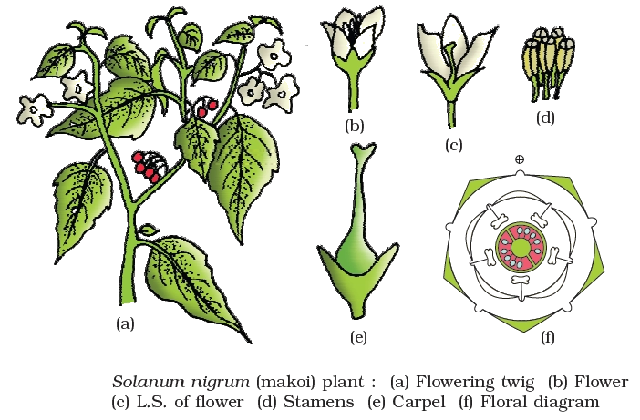
🎯Key Concepts
- 🌍Distribution: cosmopolitan; strongest representation in warm regions, also temperate.
- 🍃Leaves: alternate, simple (rarely pinnately compound), exstipulate, reticulate venation.
- 🌸Flower: ⚥, ⊕, pentamerous; gamosepalous calyx (often persistent) + usually gamopetalous corolla; aestivation commonly valvate (may vary with genus).
- 🧬Androecium: 5 stamens, epipetalous (attached to corolla).
- 🥚Gynoecium: bicarpellary, syncarpous; ovary superior; usually bilocular; axile placentation.
- 🍅Fruit: berry or capsule; seeds many and typically endospermous.
🔎STANDARD FAMILY DESCRIPTION ORDER (EXAM WRITING)
- Habit → Root (if asked) → Stem → Leaves (vegetative characters).
- Inflorescence → Flower (sex, symmetry, ovary position).
- Calyx → Corolla → Androecium → Gynoecium (with fusion + placentation).
- Then Fruit and Seeds → Floral formula → Economic importance → examples.
⚙️SOLANACEAE: COMPLETE QUICK DESCRIPTION (READY-TO-WRITE)
- Habit: mostly herbs/shrubs; rarely small trees.
- Stem: herbaceous (rarely woody), aerial, erect, branched; solid/hollow; hairy/glabrous; potato tuber = underground stem.
- Leaves: alternate; simple (rarely pinnately compound); exstipulate; reticulate venation.
- Inflorescence: solitary axillary or cymose.
- Flower: bracteate/ebracteate (variable); pedicellate; complete; ⚥; ⊕; pentamerous; hypogynous (ovary superior).
⚖️DON'T MIX UP: Solanaceae vs a common look-alike family (Liliaceae)
| Basis | Solanaceae (Potato family) | Liliaceae (Lily family) |
|---|---|---|
| Leaf venation | Reticulate (dicot-like) | Parallel (monocot-like) |
| Corolla / perianth | Corolla 5, usually gamopetalous | Perianth (tepals) usually 3 + 3 |
| Stamen attachment | Epipetalous (to petals) | Epiphyllous (to perianth) |
| Gynoecium | Bicarpellary, superior ovary; axile placentation (common) | Usually tricarpellary, superior ovary; axile placentation |
| Fruit (typical) | Berry/capsule | Capsule/berry (varies) |
✏️Solved Q&A
1
A flower has 5 united sepals, 5 united petals, 5 stamens attached to petals, and a superior bicarpellary ovary with axile placentation. Identify the family and justify.
Answer:
Pentamerous calyx and corolla with fusion (gamosepalous/gamopetalous) suggests Solanaceae-type floral plan.
Stamens are epipetalous (attached to corolla) → a strong diagnostic clue for Solanaceae.
Gynoecium is bicarpellary, syncarpous with superior ovary and axile placentation → matches Solanaceae.
Pentamerous calyx and corolla with fusion (gamosepalous/gamopetalous) suggests Solanaceae-type floral plan.
Stamens are epipetalous (attached to corolla) → a strong diagnostic clue for Solanaceae.
Gynoecium is bicarpellary, syncarpous with superior ovary and axile placentation → matches Solanaceae.
✓ Family: Solanaceae.
2
Write the semi-technical description of Solanaceae in correct order up to fruit and seed, and add 3 economic examples with uses.
Answer:
Start with habit (herbs/shrubs) then stem (aerial; potato tuber as underground stem).
Then leaves (alternate, simple, exstipulate, reticulate) and inflorescence (solitary axillary/cymose).
Next flower characters (⚥, ⊕, pentamerous, hypogynous) and whorls: K5 united (often persistent); C5 united; A5 epipetalous; G(2) superior, usually bilocular, axile.
End with fruit (berry/capsule) and seeds (many, endospermous), then list economic plants.
Start with habit (herbs/shrubs) then stem (aerial; potato tuber as underground stem).
Then leaves (alternate, simple, exstipulate, reticulate) and inflorescence (solitary axillary/cymose).
Next flower characters (⚥, ⊕, pentamerous, hypogynous) and whorls: K5 united (often persistent); C5 united; A5 epipetalous; G(2) superior, usually bilocular, axile.
End with fruit (berry/capsule) and seeds (many, endospermous), then list economic plants.
✓ Examples: potato (food; tuber), tomato/brinjal (food), chilli (spice); also tobacco (fumigatory) and petunia (ornamental).
⭐Important Points
- Solanaceae flowers: bisexual, actinomorphic, pentamerous, typically hypogynous (superior ovary).
- Calyx and corolla are usually united (gamosepalous, gamopetalous); calyx often persistent.
- Androecium: 5 epipetalous stamens is a key diagnostic marker.
- Gynoecium: bicarpellary, syncarpous; ovary superior; usually bilocular; axile placentation; many ovules.
- Fruit commonly berry (tomato) or capsule (e.g., Datura); seeds many, endospermous.
💡Memory Technique
“Mnemonic: "So-LA-NA" = 5-5-5 + 2”
📌Quick Recap
Distribution: tropics + subtropics + temperate.Habit: herbs/shrubs (rarely small trees); stem sometimes tuberous (potato).Leaves: alternate, simple, exstipulate, reticulate.Inflorescence: solitary axillary or cymose.Flower: ⚥, ⊕, pentamerous; hypogynous (superior ovary).K5 often united persistent; C5 usually united; A5 epipetalous; G(2) superior, usually bilocular, axile.Fruit: berry/capsule; seeds many, endospermous.Economic: tomato, brinjal, potato (food); chilli (spice); belladonna/ashwagandha (medicine); tobacco (fumigatory); petunia (ornamental).
Diagnostic vegetative + floral characters, floral formula, fruit/seed, economic importance
SOLANACEAE FAMILY (POTATO FAMILY)
📖Definition & Introduction
- Solanaceae is a large dicot family ('potato family') widely distributed in tropics, subtropics and temperate regions.
- Habit: mostly herbs and shrubs; rarely small trees.
- Shows typical pentamerous, actinomorphic, bisexual flowers with gamosepalous calyx and gamopetalous corolla.
- Androecium: 5 epipetalous stamens; gynoecium bicarpellary, syncarpous with superior ovary.
- Fruit commonly berry (tomato) or capsule (Datura); seeds usually many, endospermous.
🖼️Diagram
Quick diagnostic layout: vegetative → floral → fruit/seed → economic importance.
🎯Key Concepts
- 🌱Stem: aerial herbaceous (rarely woody); potato has underground stem tuber for storage.
- 🍃Leaves: alternate, usually simple, exstipulate, reticulate venation.
- 🌼Flower: bisexual, actinomorphic, mostly pentamerous.
- 🧩Calyx: K(5) united, persistent; aestivation valvate.
- 🎺Corolla: C(5) united; typically rotate/funnel-shaped; aestivation valvate.
- 🧬Gynoecium: G(2) syncarpous; ovary superior, bilocular; placentation axile with many ovules.
🔎VEGETATIVE CHARACTERS (DIAGNOSTIC)
- Habit: mostly herbs and shrubs; rarely small trees.
- Stem: aerial, erect, cylindrical, branched; solid or hollow; hairy or glabrous.
- Special case: potato has underground stem tuber (vegetative propagation + storage).
- Leaves: alternate; usually simple (rarely pinnately compound); exstipulate.
- Venation: reticulate (typical dicot feature).
⚙️FLORAL CHARACTERS + FLORAL FORMULA
- Inflorescence: solitary axillary or cymose (often in Solanum).
- Flower: bisexual and actinomorphic; typically pentamerous.
- Calyx: 5 sepals united → K(5); persistent; aestivation valvate.
- Corolla: 5 petals united → C(5); aestivation valvate.
- Androecium: 5 stamens, epipetalous → A5.
⚖️Solanaceae: BERRY vs CAPSULE (common fruits)
| Basis | Berry (e.g., tomato, brinjal) | Capsule (e.g., Datura) |
|---|---|---|
| Pericarp | Fleshy at maturity | Dry at maturity |
| Dehiscence | Usually indehiscent | Dehiscent (opens to release seeds) |
| Seeds | Many; endospermous | Many; endospermous |
| Exam cue | Food-type fruit; pulpy | Dry fruit with opening lines/pores |
✏️Solved Q&A
1
A plant shows alternate, exstipulate leaves with reticulate venation; flower is actinomorphic and bisexual with K(5), C(5), A5 epipetalous, and superior bicarpellary ovary with axile placentation. Identify the family and justify.
Answer:
Alternate, simple, exstipulate leaves with reticulate venation match common Solanaceae vegetative traits.
Flower characters ⊕ ⚥ K(5) C(5) A5 with epipetalous stamens are typical of Solanaceae.
Gynoecium G(2), superior ovary, bilocular with axile placentation strongly indicates Solanaceae.
Alternate, simple, exstipulate leaves with reticulate venation match common Solanaceae vegetative traits.
Flower characters ⊕ ⚥ K(5) C(5) A5 with epipetalous stamens are typical of Solanaceae.
Gynoecium G(2), superior ovary, bilocular with axile placentation strongly indicates Solanaceae.
✓ Family: Solanaceae (potato family).
2
Why is potato considered a stem modification in Solanaceae, and not a root modification?
Answer:
Potato tuber bears nodes and internodes with buds ('eyes'), which are stem features.
These buds can sprout into new shoots, showing vegetative propagation typical of stem tubers.
Roots generally lack buds and distinct nodes/internodes; hence potato tuber is an underground stem.
Potato tuber bears nodes and internodes with buds ('eyes'), which are stem features.
These buds can sprout into new shoots, showing vegetative propagation typical of stem tubers.
Roots generally lack buds and distinct nodes/internodes; hence potato tuber is an underground stem.
✓ Potato is an underground stem tuber because it has nodes, internodes and buds (eyes).
⭐Important Points
- Remember: Solanaceae flower is ⊕ and ⚥ with superior ovary (e.g., brinjal).
- Calyx persistent is a strong clue (often remains on fruit).
- Androecium is epipetalous: stamens attached to petals.
- Gynoecium: bicarpellary, syncarpous; ovary bilocular with axile placentation and many ovules.
- Fruit type asked frequently: berry or capsule; seeds many, endospermous.
💡Memory Technique
“Mnemonic: "So-LA-NA = 5-5-5-2"”
📌Quick Recap
Family: Solanaceae = potato family; mostly herbs/shrubs; widespread distribution.Stem: herbaceous; potato has underground stem tuber.Leaves: alternate, usually simple, exstipulate, reticulate.Inflorescence: solitary axillary or cymose.Flower: bisexual, actinomorphic; K(5) persistent; C(5) united; A5 epipetalous; G(2) superior, axile.Fruit: berry or capsule; Seeds: many, endospermous.Economic importance: food (potato, tomato, brinjal), spice (chilli), medicine (belladonna, ashwagandha), fumigatory (tobacco), ornamental (petunia).